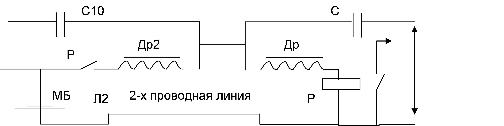
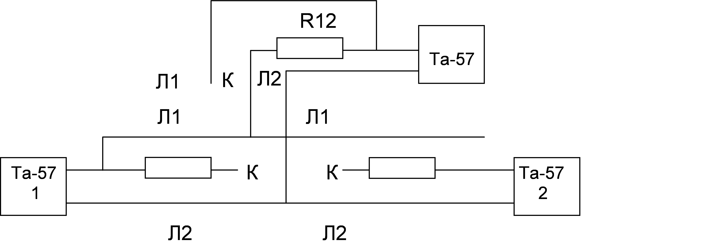
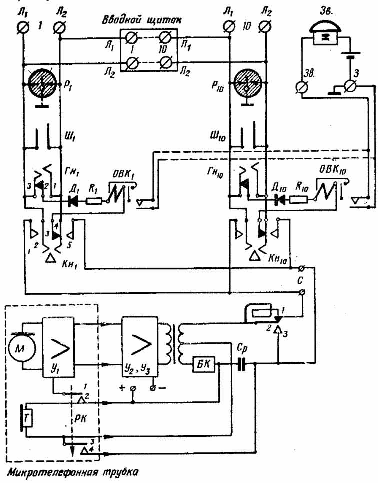
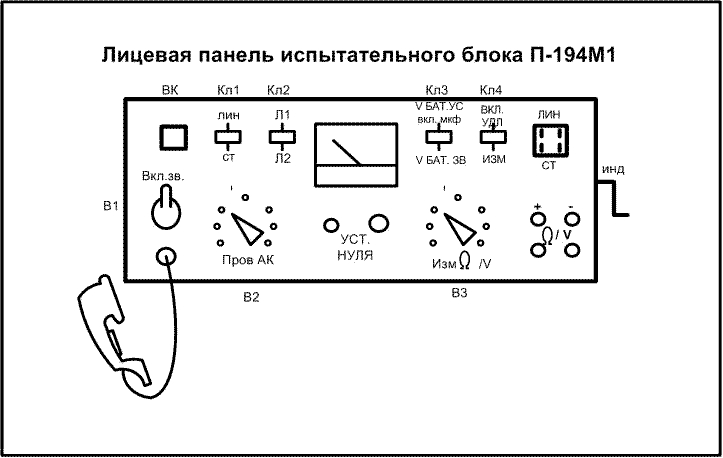
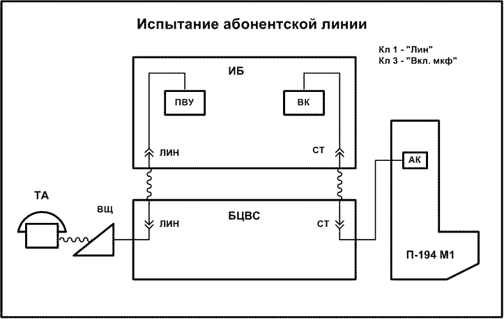
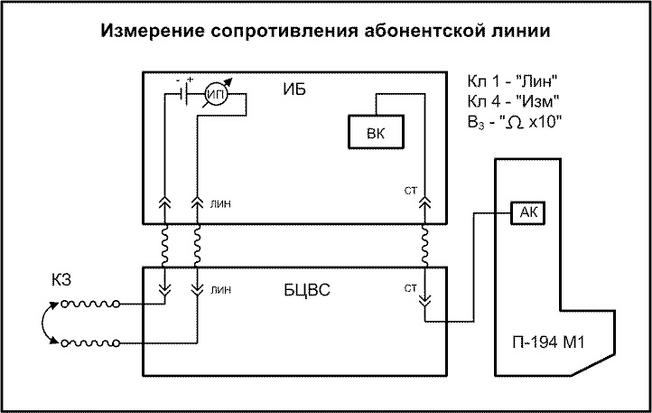
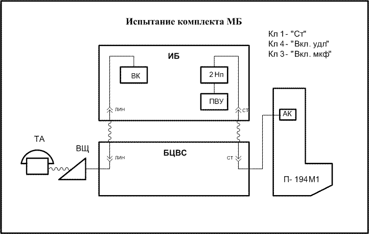
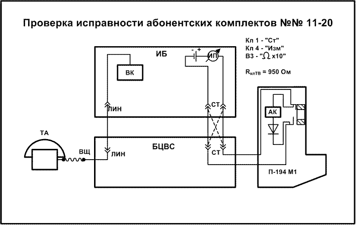
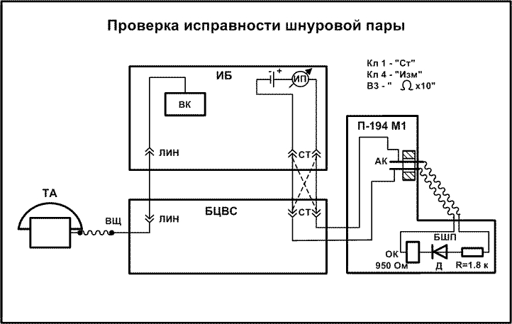
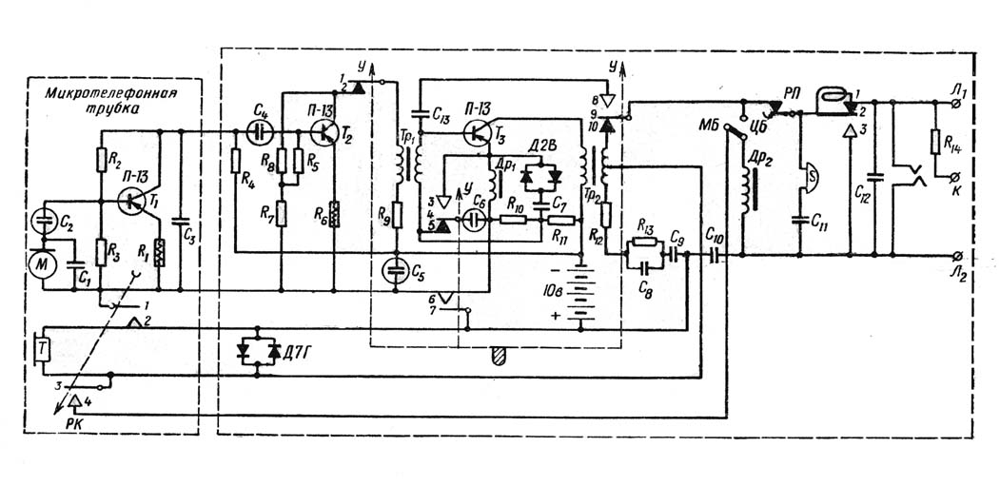

Тема №2. Телефонные аппараты и коммутаторы.
Занятие №1. Телефонные аппараты и ручные телефонные станции.
Учебные вопросы:
- Назначение, технические характеристики, устройство и принцип работы телефонного аппарата ТА-57 (П-171Д) по принципиальной схеме.
- Назначение, состав, технические характеристики, и принцип работы полевого коммутатора П-193М(М2) по функциональной схеме.
- Назначение, состав, технические характеристики, и принцип работы коммутатора П-194М1(П-198М) по функциональной схеме.
Литература:
1. Назначение, технические характеристики, устройство и принцип работы телефонного аппарата ТА-57 по принципиальной схеме.
Телефонный аппарат ТА-57(рис.1.1) предназначается для обеспечения телефонной связи в полевых условиях.
Он является аппаратом системы МБ (местной батареи) с индукторным вызовом и может быть включен в станции системы ЦБ (питание аппарата при этом осуществляется от его местной батареи).
Аппарат работоспособен при температуре окружающей среды от минус 50°С до плюс 50°С и относительной влажности не выше 98% при температуре 40°С.
Аппарат обеспечивает дистанционное управление радиостанцией.

Рис.1.1. Внешний вид ТА-57.
Аппарат перекрывает затухание 48 дБ (5,5 Нп), что обеспечивает надежную связь:
- по полевой кабельной линии П-274М до 44 км;
- по постоянным воздушным линиям с диаметром проводов 3 мм - 150 - 250 км.
В аппарате имеется возможность повысить дальность приема на 30 - 35% путем использования усилителя приема.
Аппарат рассчитан на питание от батареи типа ГБ-10-У-1,3 (рис.1.2) напряжением 10 В.

Рис 1.2. Батарея ГБ-10-У-1,3.
Наибольший ток питания составляет 8 мА. Батарея обеспечивает работу аппарата без ее замены и течение 6 месяцев. Масса аппарата с источником питания не более 3 кг . Габариты: 222x165x80 мм. Аппарат при выпуске батареей не комплектуется.
Конструктивное исполнение аппарата
В состав аппарата входят:
- выемной блок;
- верхняя панель;
- микротелефон;
- ящик;
На крышке аппарата (рис.1.3), с наружной стороны, закреплена пластина 4 для записей и имеется два углубления, фиксирующие положение микротелефона при укладке его на крышку.

Рис.1.3. Внешний вид аппарата.
1-кнопка переключателя РП (маркировка ЦБ), 2-кнопка переключателя ПУ (марки-ровка У), 3-пластина для записей.
Выемкой блок.
Основанием выемного блока является гетинаксовая панель (рис 1.4), с нижней стороны которой нанесён печатный монтаж, а на верхней укреплены детали разговорной и вызывной цепей аппарата, за исключением деталей первого каскада усиления, которые монтируются в микротелефонной трубке.

Рис. 1.4. Расположение основных узлов на выемном блоке
1-переключатель РП, 2-звонок; 3-панель, 4-трансформатор ТР-1, 5-индуктор, 6-трансформатор ТР-2, 7-дроссель ДР-2, 8-дроссель ДР-1, 9-переключатель ПУ.
Индуктор.
Индуктор (рис.1.5) является источником вызывного тока и представляет собой простейший генератор.

Рис. 1.5. Устройство индуктора.

Рис. 1.5а. Индуктор.
При вращении ручки индуктора ось 2 отходит вправо, а вместе с ней и упирающаяся в нее пружина 17. Контакт между пружинами 17 и 18 нарушается, шунт с обмотки индуктора снимается. Вместе с тем пружина 17 замыкается с пружиной 16, которая соединена с клеммой Л2. При вращении якоря индуктора в магнитном поле в его обмотке наводится (индуктируется) э.д.с., которая через токосъемные пружины подается в линию. Ручка 6 с пластмассовой рельефной головкой, во избежание самоотвертывания, крепится к оси индуктора винтом.
Звонок.
Электромагнитная система звонка соленоидного типа. Общее устройство звонка приведено на рисунке 1.6, внешний вид на рисунке 1.6а.

Рис. 1.6. Устройство звонка.
Регулировка громкости производится поворотом чашки 2.

Рис. 1.6а. Внешний вид звонка.
Переключатель ПУ (переключатель усиления).
Переключатель применяется для переключения третьего каскада усилителя передачи на прием для усиления принимаемого сигнала и представляет собой набор из 10 пружин, помещенных внутри герметично закрытого пластмассового корпуса 2 (рис.1.7).
Переключение пружин производится поворотным рычагом 1, который проходит внутрь переключателя через резиновый уплотнитель, служащий для защиты от проникновения в переключатель воды.

Рис. 1.7. Внешний вид переключателя.
1 - поворотный рычаг, 2 - корпус.
Для крепления к плате у переключателя на пластмассовом корпусе имеются выступы, которые входят в соответствующие отверстия печатной платы и оплавляются.
Переключатель РП (рычажный переключатель) (рис.1.8).
Переключатель служит для выключения телефона вместе со всей разговорной цепью по окончании разговора, а также для осуществления вызова и отбоя в случае включения аппарата в станции ЦБ.

Рис.1. 8. Рычажной переключатель.

Рис.1.8а. Размещение переключателя РП на панели выемного блока.
Верхняя панель.
Верхняя панель (рис.1.9) служит крышкой для выемного блока. На панели расположены три линейные клеммы 1 и системы рычагов переключателей ПУ и РП. Имеется также гнездо для укладки микротелефона и гнездо для батареи. Батарея закрывается откидной крышкой 8. Пружина 2 предохраняет батарею от выпадения.
Уложенный шнур микротелефона удерживается пружиной 4. На крышке батарейной камеры нанесена краткая инструкция пользования аппаратом, марка и заводской номер аппарата. На панели, справа от крышки, нанесена схема включения аппарата в линию.

Рис. 1.9. Внешний вид верхней панели:
1 - клеммы линейные, 2 - пружина, 3 - пружины, 4 - пружина, 5, 7 - рычаги, 6 - ог-раничитель, 8 - крышка.
В углублении панели имеется отверстие для головки винта переключателя рода работ с отметками МБ и ЦБ, а в стенке - два отверстия для визуального контроля правильности установки рычагов ПУ и РП. Рычаги переключателей ПУ и РП вращаются на общей оси с крышкой батарейной камеры и удерживаются в нужном положении спиральными пружинами 3, а также головкой ограничителя 6, предохраняющего их от откидывания кверху.
Верхняя панель при установке в аппарат ложится на бортики, имеющиеся на задней и боковых стенках ящика, а спереди - на металлическую перегородку, и крепится к ящику со стороны дна невыпадающими винтами, отмеченными рельефными кружочками.
Микротелефон.
Микротелефон (рис.1.10) состоит из:
- двух пластмассовых полутрубок 4;
- гетинаксовой панели, на которой смонтирован первый каскад усиления;
- телефона ДЭМК-6А, заключенного в резиновую ушную раковину;
- микрофона ДЭМШ-lA;
- колодки со шнуром 1;
- разговорного клапана РК 3.
Полутрубки соединены между собой двумя невыпадающими винтами, а со стороны микрофона - пружинным кольцом 2. Микротелефон соединяется с аппаратом с помощью пятижильного шнура с соединительной колодкой 1 на конце. Колодка состоит из двух полукорпусов, соединенных винтами. Внутри ее в специальных гнездах, согласно расцветке, нанесенной на внутренней части одного полукорпуса, помещены жилы шнура с пружинными лепестками. В верхней части колодки имеются гнезда для подключения дополнительного телефона. Микротелефон снабжен крючком для подвески.

Рис. 1.10. Внешний вид микротелефона:
Схема аппарата.
Схема телефонного аппарата (рис. 1.11. Приложение) обеспечивает:
- передачу и прием разговора;
- передачу и прием вызова при работе в системе местной батареи (МБ) и в системе центральной батареи (ЦБ);
- дистанционное управление радиостанцией.
Передача разговора
Разговорная часть схемы аппарата на передачу включает в себя электромагнитный шумостойкий микрофон типа ДЭМШ-1А и трехкаскадный усилитель на полупроводниковых транзисторах типа МП13 - МП15. Все три каскада микрофонного усилителя собраны по схеме с общим эмиттером.
Первый каскад усилителя нагружен на резистор R3 и связан со вторым каскадом через разделительный конденсатор С4, С2, выполняет функции разделительного конденсатора первого каскада.
Второй каскад связан с третьим при помощи межкаскадного трансформатора Tp1, третий - с линией при помощи выходного трансформатора Тр2.
Питание на микрофонный усилитель подается при нажатии разговорного клапана РК, при этом к схеме подключается плюс батареи. Минус батареи включен постоянно на коллектор транзистора первого каскада через резистор R3, на коллектор, транзистора второго каскада - через резистор R7 и первичную обмотку трансформатора Tp1, на коллектор транзистора третьего каскада - через первичную обмотку Тр2.
Плюс подается на эмиттеры первого и второго транзисторов через резисторы R13 и R14, а на третий транзистор через дроссель Др1. Резисторы R13, R14 являются регулировочными и подбираются при изготовлении аппарата так, чтобы независимо от разброса характеристик микрофона и транзисторов обеспечивался постоянный уровень на выходе микротелефона и аппарата в целом, т. е. соблюдалась их взаимозаменяемость.
Автоматическое смещение на базу транзисторов (отрицательное по отношению к напряжению на эмиттере) подается от той же батареи с делителей напряжения R1-R2 R5 - R6, R8 - R9. Эти резисторы вместе с резисторами, включенными в цепи эмиттера, и резистором R4 служат одновременно для стабилизации режима работы транзисторов при изменении температуры.
Конденсатор С5, включенный для переменного тока параллельно резистору R8, исключает влияние его на сопротивление нагрузки третьего каскада. Для устранения возможной генерации усилителя при повышении внутреннего сопротивления батареи в процессе ее разрядки параллельно ей включен конденсатор С7, который шунтирует сопротивление батареи по переменному току. С целью устранения прослушивания работы радиста при расположении аппарата вблизи радиостанции в схему включены конденсаторы С1 и С3, служащие для фильтрации высокочастотных колебаний, находящихся на микрофоне, первом каскаде усиления и жилах микротелефонного шнура, соединяющих первый каскад со вторым.
Напряжение в вольтах, измеренное на выводах транзисторов по отношению к "+" (Л2) при U6=10В и нажатом РК, приведено в таблице.
| Выводы | ПП1 | ПП2 | ППЗ |
|---|---|---|---|
| Э | 0 - 0,6 | 0,3 | 0,3 |
| Б | 0,5 - 0,6 | 0,5 | 1,2 |
| К | 1,6 - 1,8 | 4,2 | 9,0 |
Выходной трансформатор является одновременно элементом, создающим обычную противоместную схему мостового типа. Две секции вторичной обмотки этого трансформатора являются плечами моста. Двумя другими плечами служат линия и балансный контур. Телефон включен в. нулевую, ветвь.
При равновесии моста разговорные токи, возникающие, во время передачи речи в линию во второй обмотке выходного трансформатора, а также обусловленные акустическими шумами, воспринимаемыми микрофоном, создают в точках, куда включен телефон, одинаковые потенциалы, поэтому ток через телефон не проходит. В результате речь при передаче не прослушивается в собственном телефоне, а акустически шумы приемного помещения не мешают приему.

Балансный контур аппарата рассчитан на работу по кабелю П-274М. В целях лучшего согласования входного сопротивления этой линии в диапазоне разговорных частот он состоит из четырех элементов R10, R11, C8, C9. Однако с помощью такого контура можно уравновесить балансную схему только для строго заданного входного сопротивления линий. При переходе на другую линию и даже при изменении параметров линии под воздействием погоды баланс моста нарушается, и шумы приемного помещения, проникая в телефон, мешают приему речи, особенно при связи по линиям большой протяженности, и дальность действия аппарата обычно резко сокращается.
Для обеспечения достаточно высокой шумостойкости тракта местного эффекта при нарушении баланса противоместной схемы предусмотрено специальное устройство в схеме аппарата. В цепь эмиттера транзистора. третьего каскада включена цепочка из нелинейного сопротивления Д1, Д2, из двух встречно и параллельно включенных диодов типа Д2В, конденсатора С6 и дросселя Др1 (конденсатор и дроссель служат для разделения цепей постоянного и переменного тока).
Нелинейное сопротивление Д1, Д2 представляет собой переменное сопротивление цепи обратной связи третьего каскада. При слабых сигналах (шумах) на входе усилителя сопротивление Д1, Д2 переменному току велико, а следовательно, велика отрицательная обратная связь, и усилитель практически заперт.
При увеличении входного напряжения до значений, при которых сопротивление Д1, Д2 переменному току становится небольшим и практически постоянным, отрицательная обратная связь резко уменьшается М коэффициент усиления третьего каскада возрастает.
Так как сопротивление Д1, Д2 в области больших уровней имеет нелинейный характер, то для выравнивания амплитудной характеристики усилителя схема рассчитана таким образом, что изменение сопротивления цепи обратной связи третьего каскада за областью ограничения компенсируется изменением коэффициента усиления второго каскада. Происходит это следующим образом: с увеличением напряжения на Д1, Д2 его сопротивление имеет тенденцию к снижению, это приводит к увеличению коэффициента усиления третьего каскада и уменьшению его входного сопротивления.
Таким образом, по мере увеличения входного уровня за областью ограничения сопротивление нагрузки второго каскада уменьшается, а, следовательно, снижается его усиление. Суммарное же усиление в этом случае остается примерно постоянным (до области верхнего ограничения).
Схема микрофонного усилителя рассчитана таким образом, что область нижнего ограничения находится почти во всем диапазоне частот ниже порога слышимости, поэтому ограничение слабых. составляющих практически не сказывается на разборчивости передаваемой речи.
Во избежание самовозбуждения аппарата при работе на коротких линиях и при непосредственном включении в коммутатор (режим, близкий к холостому ходу) параллельно зажимам Л1 - Л2 включен конденсатор С13. Этот конденсатор снижает отдачу аппарата на высоких частотах разговорного диапазона, на которых обычно и происходит самовозбуждение, а также является нагрузкой со стороны линий, уменьшая таким образом разбалансировку схемы при холостом ходе.
Приём разговора
Прием разговора с линии осуществляется на телефон. Сопротивление звонка, включенного параллельно линии, для токов разговорной частоты велико, и звонок практически не шунтирует телефон. Для защиты телефона от поступающего с линии на звонок индукторного вызова служит разделительный конденсатор С10, представляющий для индукторного вызова большое сопротивление.
Для автоматического уменьшения громкости принимаемой речи при работе на коротких линиях параллельно телефону включен ограничитель - нелинейное сопротивление ДЗ, Д4 из двух встречно и параллельно включенных диодов типа Д2В. Шунтирующее действие ДЗ, Д4 на телефон растет с увеличением поступающего с линии тока, так как при этом сопротивление ДЗ, Д4 падает.
Телефон. по принципу своей работы может преобразовывать электрические колебания в акустические и, наоборот, акустические колебания - в электрические, т. е. служит также микрофоном. Поэтому разговоры, ведущиеся в помещении, где расположен аппарат, могут быть переданы телефоном в линию.
Во избежание этого в аппарате предусмотрено выключение телефона, что осуществляется при укладке микротелефона в гнездо на крышке аппарата. При этом разрываются контакты РП, и телефон вместе с выходным трансформатором отключается от Л1.
В аппарате предусмотрена возможность использования оконечного каскада микрофонного усилителя в качестве усилителя приема (в случае плохой слышимости). При этом транзистор своим входом (база-эмиттер) подключается к линии. Связь в этом случае может осуществляться только по симплексной системе:
- слушаешь - нажми кнопку включения усилителя приема У, говоришь - отпусти ее. При нажатии кнопки У происходят следующие переключения;
- база транзистора третьего каскада микрофонного усилителя контактами ПУ-3 через конденсатор С10 подключается к линейной клемме Л1. При этом Л1 отключается от секции III вторичной обмотки выходного трансформатора, эмиттер транзистора третьего каскада с помощью контактов на замыкание ПУ-1, ПУ-4 подключается через конденсатор С5 к Л2. Контакты ПУ-1 служат, кроме того, для удержания цепи питания (подачи плюса батареи на усилитель приема), а при замыкании контактов ПУ-4 конденсатор С5 шунтирует (для переменного тока) цепь обратной связи с нелинейным устройством, так как последнее при приеме слабых сигналов с линии принесло бы вред, а не пользу.
Контактами ПУ-2 первичная обмотка трансформатора Тр1, а вместе с ней и минус батареи отключается от коллектора транзистора ПП2. Таким образом, если при приеме с усилителем разговорный клапан РК окажется нажатым - это не будет создавать помех приему.

Схема коммутации 3 усилителя
Связь в этом случае может осуществляться только по симплексной системе:
Слушаешь – нажми кнопку включения усилителя приема У (контакт ПУ3);
Говоришь – отпусти ее.
Посылка вызова
В системе МБ (местной батареи). Во время вращения ручки индуктора при посылке вызова автоматически переключается средняя пружина набора пружин индуктора. При этом снимается шунт с обмотки индуктора, одновременно шунтируется цепь звонка и разговорная схема, а обмотка индуктора подключается непосредственно к Л2 (вторым концом обмотка постоянно подключена к Л1).
В системе ЦБ (центральной батареи). При включении в систему ЦБ переключатель рода работ ПРР должен быть поставлен в положение ЦБ; при этом параллельно Л1 - Л2 включается дроссель Др2.
Когда микротелефон в положении покоя лежит в гнезде на крышке аппарата, контакты рычажного переключателя РП разомкнуты и цепь дросселя ДР2 также разомкнута. При снятии микротелефона с кнопки переключателя контакты РП замыкаются, и дроссель ДР2 подключается к линии. Цепь станционной батареи замыкается через обмотку дросселя, на станции ЦБ срабатывают вызывные устройства.
Дистанционное управление радиостанцией
Переключатель рода работ ПРР должен находиться в положении МБ. В этом случае при нажатии на разговорный клапан РК дроссель Др2 подключается к Л2, и таким образом, цепь управления радиостанцией замыкается, и радиостанция переключается на передачу. При отпускании разговорного клапана дроссель Др2 отключается от линии,. происходит разрыв цепи постоянного тока и радиостанция переключается на прием.
Структурная схема дистанционного управления передатчиком радиостанции
Работа аппарата на контрольной телефонной станции (КТС)
На КТС аппарат включается параллельно в двухпроводную линию через клеммы К - Л2. При этом аппарат включается в линию через резистор R12, который служит для уменьшения затухания, вносимого промежуточным аппаратом в тракт оконечных аппаратов. Вносимое затухание одним контрольным аппаратом 5,4 дБ (0,625 Нп).
Схема подключения ТА для контроля переговоров между абонентами ТА1 и ТА2
Защита схемы от высоких напряжений и токов
При включении телефонного аппарата непосредственно в линию на его линейные зажимы может попасть высокое напряжение (грозоразряды вблизи линии, касание проводов осветительной сети и т. д.). Для защиты транзисторов в схему введены кремниевые стабилитроны Д5, Д6 типа Д814А - Д814Д, сопротивление которых для слабых разговорных токов очень велико, и поэтому они практически не шунтируют вторичную обмотку выходного трансформатора.
При попадании на Л1 - Л2 высокого напряжения сопротивление диодов Д5, Д6 резко падает. Для тока промышленной частоты (50 Гц) их сопротивление становится значительно меньше сопротивления конденсатора С", близкого для 50 Гц к 6000 Ом.
Значительная часть напряжения, поступившего на клеммы Л1 - Л2, упадет на этом конденсаторе; напряжение на вторичной обмотке выходного трансформатора не будет превышать номинального для диодов (7 - 14 В), так как диоды открываются при этом напряжении и тем самым защищают схему аппарата от воздействия высокого напряжения. Опыты показали, что схема выдерживает напряжение до 900 В переменного тока.
Грозовой разряд содержит широкий спектр частот - от самых низких до самых высоких. Если для низких частот сопротивление конденсатора С10 велико и схема работает аналогично тому, как это имеет место на частоте 50 Гц, то для высоких частот сопротивление этого конденсатора мало, и в цепи высокого напряжения оказываются включенными только диоды Д5, Д6.
Так как сопротивление их при этом очень мало, то через них протечет ток недопустимо большой величины, и диоды могут сгореть. Поэтому включать аппарат непосредственно в магистральные, особенно в воздушные линии, рекомендуется через клеммы К - Л2.
Резистор R12 будет, как в предыдущем случае конденсатор С10, предохранять схему от избыточных токов и принимать на себя подавляющую долю падения напряжения. Во избежание перегорания этот резистор рассчитан на повышенную мощность рассеивания.
Аппарат телефонный П-171Д предназначен для работы в двухпроводном и четырёхпроводном режимах с автоматическими и ручными коммутационными станциями.
Питание аппарата осуществляется дистанционно от станционного источника тока с номинальным напряжением 60 В через питающий комплект с сопротивлением постоянному току 1100 Ом.
Аппарат сохраняет работоспособность при подключении к коммутационным станциям с напряжением питания 48 и 24 В.
Конструкция аппарата настольная, позволяет устанавливать аппарат в подвижных объектах, крепить к столу и на время передвижения объекта крепить микротелефонную трубку к корпусу аппарата.
Аппарат предназначен для эксплуатации при температуре окружающей среды от минус 10С до плюс 50С и относительной влажности воздуха до 98% при температуре до 40С.
Аппарат имеет электростатический и магнитный экраны. Ток, потребляемый в двухпроводном режиме, не менее 20 мА при напряжении питания 60 В.
Аппарат телефонный П-171Д обеспечивает в двухпроводном и четырёхпроводном режимах:
- вызов станции и получение ответа станции;
- набор номера;
- ведение разговора;
- отбой по окончании разговора;
- одновременное получение акустического и оптического сигналов вызова.
Масса аппарата не более 4 кг.
Устройство аппарата
Аппарат выполнен в настольном исполнении.
Внешний вид аппарата и узлы, входящие в него, показаны на рис. 2.1.

Рис 2.1. Внешний вид аппарата П-171Д.
Корпус аппарата.
Корпус аппарата изготовлен из термопластичной пластмассы. Внутренние поверхности колпака и основания аппарата имеют электростатический экран. Узлы и детали, входящие в состав корпуса, приведены на рис.2. Механизм крепления микротелефонной трубки, входящий в состав корпуса, обеспечивает крепление микротелефонной трубки.
При повороте ручки по часовой стрелке эксцентрик выдвигает подвижные планки с резиновыми наконечниками и, прижимая их к микротелефонной трубке, закрепляет её на корпусе. Крышка устанавливается на колпаке сверху и крепится тремя винтами с внутренней стороны.
На основании аппарата имеется металлическая крышка, открывающая доступ к перемычкам переключения режима работы, и приведена схема расположения перемычек режима работы.
Основание аппарата соединяется с колпаком четырьмя невыпадающими винтами. На основании аппарата с нижней стороны установлены выдвижные планки для крепления аппарата к столу.
Номеронабиратель.
В аппарате применён дисковый номеронабиратель. Механизм номеронабирателя закрыт колпачком, предохраняющим его от механических повреждений и загрязнения.
Трубка микротелефонная.
Узлы и детали, входящие в микротелефонную трубку, приведены на рис.2.2.
Рукоятка микротелефонной трубки, ушная раковина и микрофонный амбушюр изготовлены из термопластичной пластмассы.
В микротелефонной трубке установлены: микрофон МДК-1А, телефон ТДМ-1Э.
Микротелефонная трубка соединена с аппаратом четырёхжильным спиральным шнуром ШТСИЭ-4, каждая жила которого находится в индивидуальном экране.
Внутренние поверхности микротелефонной трубки, ушной раковины и амбушюра имеют электростатический экран.
Тангента микротелефонной трубки представляет собой контактную группу, работающую на размыкание.
Плата монтажная.
Плата изготовлена из фольгированного стеклотекстолита.
Элементы схемы аппарата, установленные на монтажной плате, показаны на рис.2.3.
К основанию аппарата плата крепится винтами. Трансформаторы, дроссель Др3, катушка индуктивности L – экранированы. Рычажный переключатель обеспечивает переход схемы аппарата из состояния приёма вызова при уложенной микротелефонной трубке в состояние ведения разговора при снятой микротелефонной трубке.
Рычажный переключатель состоит из контактных пружин, закреплённых на стойке.
В качестве оптического индикатора применена неоновая лампа ИНС-1.
В аппарате применён звонок соленоидного типа.
Линейная розетка аппарата состоит из металлического основания, металлической крышки, монтажной платы с установленными на ней элементами схемы фильтра. Конструкцией розетки предусмотрены отверстия в основании для крепления её к столу или стене и возможность пломбирования розетки после подключения внешних цепей. На монтажной плате нанесена маркировка подключения. Линейная розетка соединяется с аппаратом экранированным линейным шнуром ШТЛИЭ-4.

Рис.2.2. Трубка микротелефонная.

Рис.2.3. Монтажная плата П-171Д.
Конструкция аппарата настольная, что позволяет устанавливать ТА в подвижных объектах. С этой целью предусмотрена возможность крепежа ТА к столу и микротелефонной трубки к корпусу аппарата на время движения.
Аппарат имеет электростатический и магнитный экраны; каждый из четырех проводов шнура, соединяющего микротелефонную трубку с корпусом аппарата, индивидуально заэкранирован. На входе электрической схемы ТА имеются LС-фильтры подавления высокочастотных составляющих сигнала. Приемник вызова - параллельно включенный электромеханический соленоидный звонок и неоновая лампа, что обеспечивает акустическую и оптичес¬кую сигнализацию о поступившем вызове. Микрофон ТА подключен к трех¬каскадному усилителю. Схема питания усилителя обеспечивает постоянную полярность и номинальную величину подаваемого на его каскады напряже¬ния независимо от полярности подключения линейных клемм ТА к АЛ. На входе схемы питания также имеется LС-фильтр, подавляющий переменную составляющую входного напряжения. Балансный контур ТА П-171 прост и состоит из одного резистора, а в диагональ моста противоместной схемы включен не непосредственно телефон, а первичная обмотка трансформатора Тр 2. Вторичная обмотка этого трансформатора подключена к телефону.
При передаче речевого сигнала во вторичной обмотке трансформатора Тр 1 наводится ЭДС. Для того, чтобы отсутствовал местный эффект, необ¬ходимо, чтобы переменный ток не протекал в первичной обмотке трансформатора Тр 2. Это будет обеспечиваться, когда выполняется равенство Zл=Zбк, т.е. разность потенциалов Uсd=О.
2. Назначение, состав, технические характеристики, и принцип работы полевого коммутатора П-193М(М2) по функциональной схеме.
Полевой телефонный индукторный коммутатор П-193М предназначен для оборудования телефонных станций малой емкости. Он рассчитан на включение десяти двухпроводных кабельных и воздушных абонентских линий с телефонными аппаратами системы МБ или радиостанциями, схема которых допускает дистанционное управление.
Емкость телефонной станции можно увеличить до 20 абонентов, установив два коммутатора П-193М. Вызов абонентов и отбой в коммутаторе принимаются на отбойновызывные клапаны абонентских комплектов и фиксируются ими.
Опросновызывные кнопки, применяемые в коммутаторе, обеспечивают возможность опроса абонентов, посылки вызова и контроля за прохождением разговора с коммутатора без применения шнуров.
Звонок постоянного тока с батареей дублирует поступивший вызов звуковым сигналом. Абоненты соединяются при помощи шнуров абонентских комплектов. Схема коммутатора позволяет осуществлять циркулярное соединение абонентов.
В коммутаторе предусмотрена схема рабочего места с разговорно-вызывными приборами (телефон, динамический микрофон, индуктор) и с усилителем, включенным в цепь передачи разговора телефониста и собранным на полупроводниковых приборах (кристаллические триоды типа П-13).
Усилитель питается от батареи напряжением 9 в
Дальность приема сигналов вызова по линиям связи из кабеля П-275 10—12 км, по линиям связи из кабеля П-274 — 20—25 км. Затухание, вносимое коммутатором в разговорную цепь двух абонентов, не превышает 0,1 неп на частоте 800 гц. Переходное затухание между двумя любыми разговорными цепями коммутатора составляет не менее 9 неп на частоте 800 гц.
Телефонист и приборы коммутатора защищены от грозовых разрядов газонаполненными разрядниками типа РБ-5. Кроме линейных зажимов, в коммутатор вмонтирована 30-контактная соединительная колодка с гнездами, служащая для включения соединительного кабеля от линейного щитка при каблированном вводе абонентских линий. Абонентские линии могут подключаться как к зажимам линейного щитка, так и непосредственно к линейным зажимам коммутатора.
Коммутатор рассчитан на работу в полевых условиях при температуре окружающей среды от -40 до +50° С и относительной влажности воздуха до 80%.
Вес коммутатора П-193М без линейного щитка и вводного кабеля 13 кг. Вес линейного щитка с вводным кабелем 9 кг. Общий вес комплекта 22 кг.
Коммутатор П-193М является модернизацией коммутатора П-193 и имеет следующие преимущества:
- содержит разговорно-вызывные приборы, что дало возможность освободиться от отдельного телефонного аппарата при обслуживании коммутатора;
- разговорные приборы рабочего места коммутатора обеспечивают устойчивую связь абонентов с коммутатором в условиях шума с уровнем до 60 дб;
- позволяет включать в абонентские комплекты радиостанции с дистанционным управлением и вести переговоры по радио с рабочего места коммутатора;
Состав оборудования коммутатора.
В комплект коммутатора П-193М (рис. 1 и 2) входят (в шт.):
- Коммутатор емкостью на 10 номеров. 1
- Ручка индуктора 1
- Соединительный шнур для подключения второго коммутатора . 1
Комплект запасных частей и инструмента:
- регулировка для контактных пружин (прямая) ..1 регулировка для контактных пружин (боковая) 1 отвертка b = 3 мм . 1
- съемник для снятия разрядников .1
- коммутаторные шнуры двух цветов со штепселями и наконечниками на концах ...... 2
- Чехол для укладки соединительного шнура, штепселей абонентских шнуров, запчастей и инструмента .... 1
- Заплечная сумка для укладки и переноски коммутатора 1
- Линейный щиток 1
- Соединительный кабель ТСКВ-10x2 длиной 25 м . 1
- Сумка для укладки и переноски соединительного оборудования 1
- Описание коммутатора, инструкция по эксплуатации и формуляр 1.

Рис. 1. Коммутатор П-193М в развернутом виде

Рис. 2. Коммутатор П-193М (вид сзади).
Общее устройство коммутатора П-193М
Все приборы коммутатора смонтированы на шасси, помещенном в металлический корпус. Корпус коммутатора предназначен для защиты деталей и монтажа коммутатора от механических повреждений, а также от попадания пыли, влаги и грязи внутрь коммутатора.
Корпус представляет собой металлический ящик с двумя открывающимися дверцами. Передняя дверца, закрывающая лицевую панель коммутатора, шарнирно соединена с нижней стенкой корпуса и в нерабочем положении запирается двумя откидными запорами. В рабочем положении коммутатора передняя дверца открывается и при размещении на столе подвертывается под основание коммутатора. Верхняя дверца корпуса, шарнирно соединенная с верхней стенкой корпуса, закрывает доступ к микротелефонной трубке, к панели с линейными зажимами и к 30-контактной колодке. Благодаря такому соединению она свободно может открываться. Вырезы на боковых стенках дверцы служат для ввода абонентских линий или кабеля. В нерабочем положении коммутатора эти вырезы закрываются поворотными заслонками.
Коммутатор можно подвесить на стену или на местные предметы при помощи четырех выдвижных планок — крючков, находящихся на задней стенке корпуса. Ремень для переноски коммутатора крепится к петлям на боковых стенках корпуса. На правой боковой стенке корпуса находится складывающаяся съемная ручка индуктора.
Каркас коммутатора (рис. 3) предназначен для размещения и крепления всех деталей коммутатора, а также для монтажа схемы.
На каркасе размещены: лицевая панель, верхняя панель с линейными зажимами, плата с усилителем рабочего места коммутатора, плата с разрядниками, индуктор и поддон.

Рис. 3. Каркас коммутатора П-193М (вид спереди):
1- лицевая панель; 2- верхняя панель с линейными зажимами; 3-боковой крон-штейн; 4- индуктор с ручкой; 5- поддон; 6- планка для записи позывных; 7- опросно-вызывные кнопки; 8- шторки крепления дверец клапанов; 9- отбойно-вызывные клапаны; 10- абонентские соединительные гнезда; 11- холостые гнезда; 12- отсек для батареи питания усилителя
На лицевой панели коммутатора (рис. 4) расположены:
- планка 1 с надписью: «Помни, противник подслушивает!»;
- планка 2 для записи позывных абонентов;
- рычаг 3 возврата опросно-вызывных кнопок в исходное положение;
- опросно-вызывные кнопки 4;
- отбойно-вызывные клапаны 5;
- подвижная шторка 9 для закрепления дверец отбойно-вызывных клапанов;
- соединительные гнезда 6;
- дверца 7 с холостыми гнездами, прикрывающая поддон

Рис. 4. Вид на лицевую панель коммутатора:
На верхней панели 1 (рис. 5) коммутатора смонтированы:
- десять пар линейных зажимов 2, предназначенных для подключения линий связи к абонентам;
- два зажима С 3 для соединения двух коммутаторов П-193М при совместной работе или для подключения внешнего телефонного аппарата телефониста при выходе из строя усилителя рабочего места коммутатора;
- зажим 3в 4 для подключения внешнего сигнального звонка постоянного тика с батареей (второй провод от батареи звонка подключается к зажиму ЗЕМЛЯ);
- зажим ЗЕМЛЯ 5 для подключения заземления;
- 5-контактная соединительная колодка 6 для включения колодки шнура микротелефонной трубки;
- 30-контактная соединительная колодка 12 с гнездами для включения соединительного кабеля от линейного щитка (в случае его подключения); гнезда 30-контактной колодки и зажимы на панели с одинаковой нумерацией соединены в схеме коммутатора между собой; средний ряд гнезд колодки не задействован;
- отсек для батареи питания усилителя; отсек закрывается крышкой 14, которая закрепляется невыпадающими винтами.

Рис. 5. Панель зажимов и 30-контактной колодки:
Плата усилителя рабочего места 16 расположена за лицевой панелью в верхней части каркаса. на плате смонтированы два каскада усилителя, один из них — непосредственно в микротелефонной трубке.
В задней нижней части каркаса установлены плата с десятью разрядниками типа РБ-5 и малогабаритный индуктор мощностью 2 вт.
Поддон коммутатора предназначен для укладки соединительных шнуров со штепселями и чехла с запасными частями и инструментом. На задней стенке поддона имеется плата с гнездами для подключения наконечников токонесущих жил соединительных шнуров. Шнуры закреплены серьгами к стенке поддона. Внутри поддона имеется резиновая пластина с десятью отверстиями, служащая для распределения шнуров по номерам абонентских комплектов.
Устройство деталей коммутатора.
Коммутатор П-193М состоит из десяти абонентских комплектов и приборов рабочего места.
В абонентский комплект коммутатора входят:
- два зажима и подключенные параллельно им два гнезда в 30-контактной колодке для подключения линии связи к абоненту;
- разрядник РБ-5 для защиты телефониста и приборов коммутатора от грозовых разрядов и высоких напряжений, могущих возникнуть в линии;
- соединительное гнездо и шнур со штепселем для соединения абонентов на время переговоров;
- опросно-вызывная кнопка для подключения приборов рабочего места к линии при опросе абонента, посылке вызова и контроле за переговорами;
- отбойно-вызывной клапан для приема и фиксирования вызова и отбоя;
- диод Д7Г, предохраняющий цепь питания дистанционного управления радиостанцией от шунтирования обмоткой отбойно-вызывного клапана.
Отбойно-вызывные клапаны и гнезда (попарно) смонтированы отдельными секциями. Каждая секция крепится на лицевой панели четырьмя винтами.
Имеющиеся на лицевой панели приборы абонентского комплекта расположены на одной вертикальной линии.
К приборам рабочего места коммутатора относятся разговорные приборы для переговоров телефониста с абонентами и вызывные приборы для посылки вызова абонентам. В качестве разговорных приборов в коммутаторе П-193М используется микротелефонная трубка с электромагнитным микрофоном типа ДЭМШ-1, телефоном типа ДЭМК-6А и разговорным клапаном. Для усиления напряжения разговорных частот, создаваемого микрофоном ДЭМШ-1, служит трехкаскадный усилитель, собранный на полупроводниковых триодах П-13. Первый каскад усилителя смонтирован непосредственно в микротелефонной трубке.
Микротелефонная трубка соединяется с коммутатором пятижильным шнуром, оканчивающимся 5-контактной колодкой.
Включение питания усилителя и дистанционное управление радиостанциями осуществляются при помощи разговорного клапана.
В качестве вызывного прибора используется малогабаритный индуктор мощностью 2 Вт (применяемый в телефонном аппарате ТА-57).
Отбойно-вызывной клапан
В коммутаторе применены малогабаритные отбойно-вызывные клапаны (рис. 6).

Рис. 6. Отбойно-вызывной клапан:
Клапан состоит из сердечника 1 с катушкой 12; корпуса 2, на котором укреплены все детали клапана; якоря 4 с запорным рычагом 5; регулировочной скобы 6; дверцы 10 с зубом 8; платы 14 с номером абонента; контактных пружин 7 и экранирующего чехла 3.
Катушка с обмоткой клапана сверху и с передней торцовой стороны закрыта корпусом 2, а снизу и с боковых сторон экранирована железным чехлом 3, к которому прикреплены контактные пружины 7. Экранирующий чехол вместе с корпусом является экраном клапана и предназначен:
- для уменьшения индуктивного влияния между клапанами; при соединении абонентов для переговоров один из отбойно-вызывных клапанов остается включенным параллельно цепи разговора двух абонентов и в обмотку клапана ответвляется часть разговорного тока; при отсутствии экрана индуктивное влияние между клапанами настолько возрастает, что прослушиваются переговоры по соседним разговорным цепям; таким образом, экран увеличивает переходное затухание между разговорными цепями коммутатора;
- для уменьшения затухания, вносимого обмоткой клапана в цепь разговора; экран увеличивает индуктивное сопротивление обмотки клапана разговорному току, поэтому в обмотку клапана ответвляется незначительная часть разговорного тока;
- для увеличения чувствительности клапана при приеме вызывного тока; при наличии экрана магнитное поле клапана замыкается через сердечник, якорь, железный чехол и магнитный поток не имеет потерь на рассеивание, вследствие этого чувствительность клапана возрастает.
На конце корпуса 2 укреплена двумя винтами скоба 6, удерживающая якорь с запорным рычагом. Отверстия для винтов имеют овальную форму, что обеспечивает регулировку положения скобы, а следовательно, и хода якоря. Для предохранения якоря от залипания на нем укреплен латунный штифт 11, упирающийся в сердечник клапана при притяжении к нему якоря.
При прохождении вызывного тока по обмотке клапана его сердечник намагничивается и притягивает якорь. При этом конец запорного рычага 5 поднимается и его зуб освобождает дверцу 10 клапана. Падая под действием собственного веса, дверца открывает плату 14 с выгравированным на ней номером абонентского комплекта и своим выступом 9 замыкает контактные пружины 7 клапана.
Данные обмотки отбойно-вызывного клапана
- Число витков - 11 000
- Марка провода- ПЭЛ
- Диаметр провода - 0,1 мм
- Сопротивление постоянному току - 900 ом
- Абонентское соединительное гнездо
Абонентское соединительное гнездо (рис. 7) состоит из корпуса 1, латунной втулки 6 с внутренним диаметром 6,5 мм и контактных пружин 2, 3 и 4. Контактные пружины гнезда изолированы друг от друга и от корпуса гетинаксовыми прокладками 8 и укреплены на корпусе гнезда винтами 7. К наконечникам 5 контактных пружин со стороны монтажа припаиваются проводники схемы. Короткая и длинная контактные пружины имеют изогнутые концы, что обеспечивает свободное включение штепселя в соединительное гнездо и надежный электрический контакт пружины со штепселем.

Рис. 7. Абонентское соединительное гнездо:
1- корпус; 2- короткая контактная пружина; 3- внутренняя контактная пружина; 4- длинная контактная пружина; 5- паечные наконечники; 6- втулка; 7- крепительные винты; 8- изоляционные прокладки; 9- полочка; 10- вырез для винта крепления
При включении штепселя в соединительное гнездо головка его соединяется с короткой контактной пружиной, а корпус — с длинной контактной пружиной. При этом короткая контактная пружина отжимается головкой штепселя от внутренней пружины, разрывая электрический контакт с ней (рис. 8). Два соединительных гнезда собраны на одной металлической пластине с двумя отбойно-вызывными клапанами и составляют одну секцию. С лицевой стороны ниже дверец отбойно-вызывных клапанов укреплена пластмассовая колодка с двумя отверстиями, в которые входят латунные втулки соединительных гнезд. Около каждого соединительного гнезда выгравирован номер абонентского комплекта.

Рис. 8. Соединительное гнездо со вставленным штепселем:
1- корпус штепселя; 2- короткая контактная пружина; 3- внутренняя контактная пружина; 4- длинная контактная пружина; 5- головка штепселя
Абонентский соединительный шнур
В коммутаторе применен двухпроводный соединительный шнур марки ШК-2 (рис. 9). Токопроводящие жилы шнура имеют разноцветную резиновую изоляцию и снаружи покрыты общим хлопчатобумажным чулком.

Рис. 9. Соединительный шнур со штепселем:
1- корпус; 2- головка; 3- пластмассовая гильза; 4- гильза защитной пружины; 5- защитная пружина; 6- пластмассовая изоляция; 7- шнур;8- обойма; 9- серьга; 10- оконечная заделка; 11- наконечники.
Один конец соединительного шнура оканчивается двухпроводным штепселем, а другой — наконечниками 11 для включения шнура в схему коммутатора. Наконечники имеют разную расцветку (черную и красную) для правильного включения в схему. К коммутатору шнур прикреплен при помощи обоймы 8 с серьгой 9.
Двухпроводный штепсель
Двухпроводный штепсель (рис. 10) состоит из следующих основных частей: латунного корпуса 1, стержня 2, изолирующей втулки 3, головки стержня 4, винтов 5, 6 для подключения соединительного шнура, пластмассовой гильзы 7, спиральной пружины 8, изолирующей втулки 9.Стержень 2 с головкой 4 и защитная пружина 5 с гильзой изолированы от корпуса. Диаметр корпуса 6,5 мм.

Рис. 10. Двухпроводный штепсель:
а- общий вид; б- разрез штепселя; 1- корпус; 2- латунный стержень; 3- втулка; 4- головка; 5, 6- винты для подключения жил шнура; 7- гильза; 8- спиральная пружина; 9- эбонитовая втулка.
Опросно-вызывные кнопки
Опросно-вызывные кнопки служат для подключения разговорно-вызывных приборов рабочего места телефониста к абонентским линиям для опроса, посылки вызова и контроля за прохождением разговора.
Все десять опросно-вызывных кнопок укреплены на общем основании и конструктивно выполнены вместе с механизмом фиксации и возвращения в исходное положение. При нажатии на любую опросно-вызывную кнопку к линии подключаются приборы рабочего места коммутатора, при этом опросно-вызывные кнопки удерживаются в рабочем (нажатом) положении специальной подвижной планкой. В исходное положение опросно-вызывные кнопки возвращаются путем нажатия на любую другую опросно-вызывную кнопку или на общий рычаг.
Опросно-вызывная кнопка состоит из электрической и механической частей.
При нажатии на опросно-вызывную кнопку вместе с пластмассовым стержнем продвигается вилка, которая своим верхним выступом приподнимает общую фиксирующую планку и проходит под ней. Фиксирующая планка под действием спиральных пружин опускается вниз и загнутой плоскостью западает в вырез на выступе вилки, фиксируя кнопку в нажатом положении. При этом возвратная пружина на нижнем конце вилки сцепляется, стремясь вернуть кнопку в исходное положение.
При нажатии на любую другую кнопку фиксирующая планка приподнимается и освобождает выступ на вилке ранее нажатой кнопки, которая под действием возвратной пружины резко отходит в первоначальное положение.
Над опросно-вызывными кнопками расположен рычаг возврата кнопок в исходное положение. Он используется в том случае, когда на другую опросно-вызывную кнопку нажимать не требуется. При нажатии на рычаг возврата кнопки задний конец рычага приподнимает фиксирующую планку, которая выходит из выреза на выступе вилки стержня, кнопка освобождается и под действием возвратной пружины возвращается в исходное положение.
Разрядник
Разрядник РБ-5 (рис. 12) служит для защиты телефониста и коммутатора от токов грозовых разрядов и от высоких напряжений. Десять разрядников укреплены на отдельной плате, прикрепляемой к поддону. Каждый разрядник имеет стеклянный баллон и цоколь. Один из штырьков на цоколе несколько удален от двух остальных, что сделано для правильного включения разрядника в схему коммутатора.

В баллон помещены три металлических стержня (электроды), на которые насажены спирали, покрытые окисью бария. Поэтому разрядник и называется бариевым. Баллон разрядника наполнен газом неоном. Два крайних электрода подключаются в схеме коммутатора к линейным зажимам Л1 и Л2, а средний электрод - к зажиму ЗЕМЛЯ.
Под действием напряжения 400в и более, возникающего в подключенных к коммутатору проводах линии, происходит ионизация газа неона и разряднике, в результате чего резко понижается сопротивление между линейными и земляным электродами и ток грозового разряда отводится в землю.
Соединительное оборудование коммутатора.
Соединительное оборудование коммутатора предназначено для каблированного ввода линий связи на телефонную станцию.
К соединительному оборудованию относятся линейный щиток и вводный кабель.
Линейный щиток (рис. 13) состоит из трех основных частей: основания, крышки и платы, на которой по краям размещены два пластмассовых бруска с линейными зажимами. Между брусками установлена 30-контактная соединительная колодка с гнездами и приспособлением для крепления соединительной ножевой колодки соединительного кабеля.
В передней части щитка имеется вырез с резиновым уплотнением для ввода кабеля ТСКВ и десяти пар полевого кабеля.
Линейный щиток может быть расположен в горизонтальном или в вертикальном положении.

Рис. 13. Линейный щиток:
1- корпус; 2- крышка; 3- колодка с зажимами; 4- 30- контактная колодка; 5- упор; 6- замок; 7- откидные запоры; 8- ушко
В вертикальном положении щиток подвешивается при помощи двух пленок с отверстиями, при этом крышка щитка может удерживаться в открытом состоянии откидным упором.
Вводный кабель ТСКВ-10x2 —телефонный станционный кабель, имеет десять пар токопроводящих жил с хлорвиниловой изоляцией разной расцветки. Каждая жила состоит из семи медных луженых проволочек, свитых канатиком. Все жилы с изоляцией снаружи обмотаны прорезиненной лентой и заключены в общую хлорвиниловую оболочку. Хлорвиниловая оболочка сверху покрыта хлопчатобумажной оплеткой, пропитанной противогнилостным составом.
Концы кабеля заделаны в 30-контактные соединительные колодки, которые обеспечивают удобное и быстрое подключение вводного кабеля к линейному щитку и к коммутатору.
Длина кабеля 25 м.
Схема коммутатора
Принципиальная схема коммутатора П-193М приведена на рис. 14.
Вызов коммутатора абонентом
Для посылки вызова абонент повертывает ручку индуктора телефонного аппарата. Переменный индукторный ток проходит по цепи № 1: телефонный аппарат абонента, например № 1, провод линии, зажим Л1, контакты 3-2 гнезда Гн1 абонентского комплекта, диод Д1, сопротивление R14 (1), обмотка отбойно-вызывного клапана ОВК1, контакты 3-4 опросно-вызывной кнопки Кн1, зажим Л2, провод линии, аппарат абонента № 1.
В этой цепи срабатывает клапан ОВК1. Дверца клапана открывается и замыкает контакты 3-4 сигнальных пружин. Если к зажимам коммутатора Зв и З подключен сигнальный звонок постоянного тока с батареей, то замыкается цепь № 2: плюс батарея сигнального звонка, зажим 3, контакты 4-3 сигнальных пружин клапана ОВК1, зажим Зв, обмотка сигнального звонка, минус батареи.
В этой цепи сигнальный звонок будет звонить до тех пор, пока дверца клапана ОВК1 не закроется и контакты 4-3 сигнальных пружин не разомкнутся.
Опрос абонента телефонистом.
Для опроса абонента, от которого поступил вызов, дежурный телефонист нажимает на соответствующую опросно-вызывную кнопку (в нашем случае на кнопку Кн1) и, нажимая на разговорный клапан РК микротелефонной трубки, отвечает, называя позывной своей станции, например: «Волга слушает». Одновременно телефонист закрывает дверцу отбонно-вызывного клапана ОВК1.
При нажатии на опросно-вызывную кнопку Кн1 цепь отбойно-вызывного клапана ОВК1 обрывается, а абонентская линия через контакты пружин 1-2 и 4-5 кнопки Кн1 подключается к зажимам С (1 и 2), т. е. к приборам рабочего места коммутатора.
При нажатии на разговорный клапан РК на микротелефонной трубке включается питание усилителя рабочего места коммутатора: плюс батареи 9в, врубной контакт 3 колодки микротелефонной трубки, контакты 2-1 разговорного клапана РК и через сопротивление R1 на эмиттер триода У1 первого каскада; параллельно плюс батареи через врубной контакт 2 колодки микротелефонной трубки и сопротивление R6 подается на эмиттер триода У2 второго каскада, а на эмиттер триода УЗ третьего каскада — через обмотку дросселя Др1.
Минус батареи 9в подается постоянно:
- на коллектор триода У1 через сопротивление R4 и врубной контакт 1 соединительной колодки микротелефонной трубки;
- на базу триода У1 с делителя напряжения, образованного сопротивлениями R2 и R3;
- на коллектор триода У2 через сопротивление R9 и первичную обмотку трансформатора Тр1;
- на базу триода У2 с делителя напряжения, образованного сопротивлениями R7 и R8, через сопротивление R5;
- на коллектор триода УЗ через первичную обмотку трансформатора Тр2;
- на базу триода УЗ с делителя напряжения, образованного сопротивлениями R10 и R11. через вторичную обмотку трансформатора Тр1.
Все три каскада усилителя смонтированы на полупроводниковых триодах П-13 по схеме с общим эмиттером.
В цепях эмиттер — коллектор каждого триода протекает постоянный ток. Напряжение звуковых частот, развиваемое микрофоном М, подается через конденсатор С2 на вход первого каскада усилителя У1 в точках между эмиттером и базой триода.
Усиленное первым каскадом напряжение звуковых частот снимается с сопротивления R4, являющегося нагрузкой для первого каскада, и через разделительный конденсатор С4 подается на вход второго каскада усилителя У2 в точках между базой и эмиттером триода. Усиленное вторым каскадом напряжение звуковых частот через вторичную обмотку трансформатора Тр1 подается на третий-выходной — каскад усилителя УЗ.
Усиленное третьим каскадом напряжение разговорных частот снимается со вторичной обмотки трансформатора Тр2 и через элементы балансного контура поступает в телефонный аппарат абонента по цепи № 3: конец III секции вторичной обмотки трансформатора Тр2, контакты 2-1 шунтирующей группы индуктора, зажим 1 (С), контакты 1-2 опросно-вызывной кнопки Кн1, зажим Л1 коммутатора, провод линии, аппарат абонента, второй провод линии, зажим Л2, контакты 4-5 опросно-вызывной кнопки Кн1, зажим 2 (С), разделительный конденсатор С 10, балансный контур, начало III секции вторичной обмотки трансформатора Тр2.
Имеющееся в, цепи эмиттера третьего каскада нелинейное сопротивление НС1, образованное включенными навстречу друг другу двумя диодами Д28, представляет собой устройство для подавления возможных шумов в месте приема, обеспечивающее достаточно высокую шумостойкость тракта местного эффекта при частичном нарушении баланса противоместной схемы. При слабых сигналах (шумы) на входе усилителя сопротивление НС1 переменному току велико, следовательно, велика глубина отрицательной обратной связи и усилитель практически заперт При увеличении напряжения на входе усилителя (полезный сигнал) до значений, при которых сопротивление НС1 переменному току становится небольшим и практически постоянным, глубина отрицательной обратной связи резко уменьшается и коэффициент усиления третьего каскада возрастает.
Трансформатор Тр2 согласует выход третьего — выходного — каскада с линией. При помощи вторичной обмотки трансформатора Тр2, выполненной по схеме со средней точкой, и элементов балансного контура R12, R13, С8 и С9 значительно снижается явление местного эффекта, так как телефон рабочего места коммутатора включен в диагональ моста, образованного указанными элементами и линией.
Конденсатор СИ, включенный параллельно разговорной цепи рабочего места коммутатора, исключает возможность возникновения генерации усилителя при работе на коротких линиях. Конденсатор С10 включен для защиты телефона от возможного поступления с линии индукторного вызова во время переговоров телефониста.
Нелинейное сопротивление НС2, состоящее из двух встречно включенных диодов Д7Г и включенное параллельно телефону, представляет собой защитное устройство от акустических ударов, т.е. является ограничителем уровня напряжений на телефоне. Встречное включение диодов обеспечивает работу защитного устройства при повышенном напряжении обеих полярностей.
Прием разговорных токов на рабочее место коммутатора происходит по цепи № 4 (цепь: «Телефонист слушает»):
аппарат абонента, провод линии, зажим Л1 коммутатора, контакты 2-1 опросно-вызывной кнопки Кн1, зажим 1 (С), контакты 1-2 шунтирующей пружины индуктора, обмотка III трансформатора Тр2, контакты 5 соединительной колодки микротелефонной трубки, телефон, контакты 3 соединительной колодки микротелефонной трубки, конденсатор С10, зажим 2 (С), контакты 5-4 опросно-вызывной кнопки Кн1, зажим Л2, провод линии, аппарат абонента.
Опросив абонента и получив заказ на соединение, телефонист вызывает требуемого абонента, например № 10.
Вызов абонента.
Для вызова абонента телефонист нажимает на опросно-вызывную кнопку Кн10. При нажатии на кнопку К10 ранее нажатая кнопка Кн1 автоматически возвращается в исходное положение, а приборы рабочего места коммутатора отключаются от абонентского комплекта № 1 и подключаются к абонентскому комплекту № 10.
После нажатия на кнопку Кн10 телефонист посылает абоненту № 10 индукторный вызов, вращая ручку индуктора, при этом замыкается цепь № 5 посылки вызова абоненту: обмотка индуктора, токосъемная пружина 4 индуктора, зажим 1 (С), контакты 1-2 кнопки Кн10, зажим Л1 абонентского комплекта № 10, провод линии, аппарат абонента, второй провод линии, зажим Л2, контакты 4-5 кнопки Кн10, зажим 2 (С), контакты 3-2 шунтирующей группы индуктора, обмотка индуктора.
В телефонном аппарате абонента № 10 звонит звонок, сигнализируя о поступлении вызова.
При ответе вызванного абонента телефонист предупреждает о вызове его абонентом № 1 и производит соединение.
Соединение и разговор двух абонентов.
Для соединения абонентов на время разговора телефонист вставляет штепсель шнура Ш1 комплекта № 1 в гнездо Гн10 комплекта № 10. При этом в абонентском комплекте № 1, шнур которого использован для соединения, отбойно-вызывной клапан ОВК1 остается включенным параллельно разговорной цепи абонентов. В комплекте № 10 отбойно-вызывной клапан ОВК10 отключится при включении штепселя в гнездо Гн10.
Убедившись в том, что абоненты начали переговоры, телефонист нажимает на рычаг возврата опросно-вызывных кнопок в исходное положение.
При соединении абонентов образуется цепь разговора № 6: телефонный аппарат абонента № 1, линия, зажим Л1 абонентского комплекта № 1, шнур, головка штепселя Ш1, короткая пружина гнезда Гн10, зажим Л1 абонентского комплекта № 10, линия, телефонный аппарат абонента № 10, линия, зажим Л2 абонентского комплекта № 10, длинная пружина гнезда Гн10, корпус штепселя Ш1, шнур, зажим Л2 абонентского комплекта № 1, линия, телефонный аппарат абонента № 1.
Параллельно цепи разговора абонентов остается включенным отбойно-вызывной клапан ОВК1 абонентского комплекта № 1, но его шунтирующее влияние на токи звуковых частот практически неощутимо.
Контроль за прохождением разговора.
Для контроля за прохождением разговора между абонентами телефонист нажимает на опросно-вызывную кнопку одного из соединенных абонентских комплектов. При этом приборы рабочего места коммутатора через контакты 1-2 и 5-4 нажатой кнопки подключаются параллельно разговорной цепи абонентов без нарушения связи между ними.
При контроле за прохождением разговора телефонист не нажимает на разговорный клапан на микротелефонной трубке и питание на усилитель не подается.
Отбой.
Сигнал отбоя или повторного вызова принимается на отбойно-вызывной клапан того абонентского комплекта, шнурами которого произведено соединение (в нашем примере - на отбойно-вызывной клапан ОВК1). При посылке сигнала отбоя или повторного вызова абонент, например) № 1, вращает ручку индуктора телефонного аппарата. Индукторный ток проходит по цепи № 7: телефонный аппарат абонента № 1, провод линии, зажим Л1 абонентского комплекта № 1, контакты 3-2 гнезда Гн1, диод Д1, сопротивление R14, обмотка клапана ОВК1, контакты 3-4 опросно-вызывной кнопки Кн1, зажим Л2 абонентского комплекта № 1, провод линии, телефонный аппарат абонента № 1.
Одновременно будет звонить звонок в телефонном аппарате абонента № 10, так как индукторный ток пройдет и по параллельно включенной разговорной цепи № 6.
При прохождении индукторного тока по цепи № 7 сработает отбойно-вызывной клапан ОВК1 и откроется его дверца, а при включенном сигнальном звонке с батареей будет звонить звонок.
Телефонист, нажав на опросно-вызывную кнопку Кн1 (или Кн10) и убедившись путем опроса абонентов в окончании разговора, вынимает штепсель шнура абонентского комплекта № 1 из гнезда Гн10, вставляет штепсель шнура в соответствующее холостое гнездо, нажатием на общий рычаг возвращает опросно-вызывную кнопку Кн1 в исходное положение и рукой закрывает дверцу отбойно-вызывного клапана.
Циркулярное соединение абонентов.
Получив заказ на циркулярное соединение, например абонента № 1 с абонентами № 2, 3, 4, телефонист, пользуясь опросно-вызывными кнопками и приборами рабочего места, поочередно вызывает абонентов № 2, 3, 4 и предупреждает их о предстоящем циркулярном разговоре. После этого телефонист соединяет их: штепсель шнура абонентского комплекта № 1 вставляет в гнездо абонентского комплекта № 2, штепсель шнура комплекта № 2 — в гнездо комплекта № 3, штепсель шнура комплекта № 3 — в гнездо комплекта № 4.
Разговорные токи между абонентами № 1 и 2 будут проходить по цепям, аналогичным ранее рассмотренной разговорной цепи № 6, одновременно ответвляясь параллельно на остальные аппараты абонентов, соединенных циркулярно.
Сигнал отбоя будет приниматься на отбойно-вызывной клапан абонентского комплекта № 1.
Связь между радиоабонентами и абонентами Мб.
Коммутатор обеспечивает ведение переговоров с корреспондентами по радио при дистанционном управлении радиостанцией с рабочего места коммутатора П-193М, а также с телефонного аппарата МБ, включенного в абонентский комплект коммутатора и приспособленного для дистанционного управления радиостанциями ( ТА-57).
Дистанционное управление радиостанциями, т.е. перевод ,их с приема на передачу и наоборот, производится путем замыкания и размыкания цепи постоянного тока, в которую включена обмотка линейного реле блока дистанционного управления радиостанции, контактами разговорного клапана микротелефонной трубки коммутатора П-193М или телефонного аппарата МБ ( ТА-57) обычного абонента.
Ток в цепи дистанционного управления при разговоре с коммутатора проходит по цепи № 8: плюс батареи питания радиостанции, обмотка линейного реле блока дистанционного управления радиостанции, провод линии, зажим Л1 абонентского комплекта коммутатора П-193М (например, комплекта № 10), контакты 2-1 опросно-вызывной кнопки Кн10, зажим 1 (С), контакты 1-2 шунтирующей группы индуктора, III секция вторичной обмотки трансформатора Тр2, контакты 5 соединительной колодки микротелефонной трубки, контакты 4-3 разговорного клапана микротелефонной трубки, контакты 4 соединительной колодки микротелефонной трубки, дроссель Др2, зажим 2 (С), контакты 5-4 опросно-вызывной кнопки Кн10, зажим Л2 абонентского комплекта № 10, провод линии, минус батареи питания радиостанции.
Дроссель Др2, включенный в цепь дистанционного управления, исключает возможность шунтирования токов звуковых частот, так как контакты 3-4 микротелефонной трубки включаются параллельно разговорной цепи.
Дистанционное управление радиостанцией с телефонного аппарата абонента производится по разговорной цепи абонентов, описанной выше. Разговорные цепи остаются такими же, как и при обслуживании обычных абонентов. Учитывая, что по проводам линии, соединяющей радиостанцию с коммутатором, подается постоянное напряжение цепи дистанционного управления, подключать их к линейным зажимам коммутатора Л1 и Л2 необходимо, соблюдая определенную полярность: провод с положительной полярностью — к зажиму Л1 абонентского комплекта, провод с отрицательной полярностью — к зажиму Л2. При неправильном включении через обмотку отбойно-вызывного клапана замкнется цепь дистанционного управления, дверца клапана откроется, а радиостанция будет находиться в режиме передачи.
Схема коммутатора позволяет вести циркулярную передачу по трем — четырем радиостанциям как с аппарата абонента, приспособленного для дистанционного управления, так и с рабочего места коммутатора. Большее число радиостанций для циркулярных радиопереговоров включать не рекомендуется вследствие сильно возрастающих шумов.
Совместная работа двух коммутаторов.
Для увеличения емкости телефонной станции до 20 номеров устанавливают два коммутатора П-193М рядом. Зажимы С обоих коммутаторов соединяются параллельно. Зажимы ЗЕМЛЯ и Зв также соединяются параллельно, и к ним подключается один звонок постоянного тока с батареей.
В тех случаях, когда вызов поступает на один коммутатор, а требуемый абонент включен в другой коммутатор, нужно сначала рычагом возврата кнопок возвратить в исходное положение опросно-вызывную кнопку вызывающего абонента, а затем послать вызов требуемому абоненту со второго коммутатора. Дальнейшее соединение абонентов аналогично ранее описанному соединению абонентов одного коммутатора.
Длина соединительных шнуров абонентских комплектов позволяет соединять любые абонентские комплекты двух коммутаторов, установленных рядом
Рис. 14. Принципиальная схема коммутатора П-193М
Полевой телефонный коммутатор П-193М2 (Рис.15) системы МБ с индукторным вызовом емкостью на 10 номеров предназначен для обеспечения внутренней телефонной связи и связи с удаленными абонентами.
К коммутатору могут быть подключены двухпроводные линии с аппаратами системы МБ, радиостанции, схемы которых приспособлены для дистанционного управления, станции ЦБ (АТС) к абонентским линиям 1 или 2, работающим в режиме СЛ.
Коммутатор предназначен для работы в полевых условиях в диапазоне температур от 233 до 323 К (от минус 40° до плюс 50°С) при относительной влажности окружающей среды не выше 98% и температуре не более 308 К(35°С).

Рис.15. Внешний вид коммутатора П-193М2
Коммутатор обеспечивает подключение:
- восьми двухпроводных палевых кабельных линий с аппаратами МБ;
- двух двухпроводных линий с аппаратами МБ или двух соединительных линий для связи со станциями ЦБ или АТС.
Схема коммутатора обеспечивает:
- телефонную связь между абонентами МБ;
- телефонную связь между абонентами МБ и станций ЦБ или АТС по двум соединительным линиям;
- переключение режима работы СЛ для работы с аппаратами МБ;
- циркулярное соединение до 10 абонентов;
- установление соединения между четырьмя парами абонентов одновременно;
- дистанционное управление радиостанциями;
- спаренную работу с аналогичным коммутатором;
- прием вызова от абонентов, опрос абонентов, посылку им вызова, соединение и отбой абонентов;
- контроль разговора соединенных абонентов;
- набор номера абонента станции АТС;
- оптическую и акустическую сигнализацию приема вызова;
- оптическую сигнализацию приема отбоя;
- возможность дублирования разговорных приборов рабочего места оператора внешним телефонным аппаратом системы МБ;
В коммутаторе предусмотрена схема рабочего места с разговорно-вызывными приборами и усилителем для обслуживания абонентов.
Питание усилителя осуществляется напряжением 9В±1,5В.
Разговорные приборы рабочего места коммутатора обеспечивают в условиях акустических шумов с уровнем, не превышающим 60 дБ, удовлетворительную разборчивость речи при затухании линии до 43,4 дБ(5,0 Нп) на частоте 800Гц.
Срабатывание приемников вызова, приемников отбоя, а также занятие (посылка вызова) станций АТС или ЦБ обеспечивается через линию, эквивалентную кабелю П-274М с затуханием на частоте 800 Гц не менее:
- по абонентским линиям 21,7 дБ (2,5 Нп);
- по соединительным линиям 8,7 дБ (1,0 Нп);
Дальность работы коммутатора с радиостанциями в режиме дистанционного управления определяется их тактико-техническими данными.
Индуктор рабочего места коммутатора обеспечивает устойчивую посылку вызова с коммутатора на телефонный аппарат через линию с затуханием 21,7 дБ (2,5 Нп) на частоте 800 Гц.
Переходное затухание между двумя любыми телефонными цепями коммутатора составляет не менее 78,2 дБ (9 Нп) на частоте 800 Гц. Затухание, вносимое коммутатором в разговорную цепь при соединении двух любых абонентов, составляет не более 0,9 дБ (0,1 Нп) на частоте 800 Гц.
Электропитание коммутатора обеспечивается от источника постоянного тока:
- внутреннего – напряжением 9В±1,5В (вариант А);
- внешнего – напряжением 27В+2,7В и 27В-4,9 (вариант Б);
- допускается электропитание коммутатора варианта Б осуществлять от внутренней батареи напряжением 9В±1,5 В в случае отсутствия внешнего источника.
Средний ток потребления коммутатора от внутреннего источника тока 15 мА, из расчета 2 вызова в час по каждой абонентской и соединительной линии.
Масса составных частей коммутатора составляет:
- коммутатор– не более 10,5 кг;
- щиток линейный не более 2,2 кг;
- щиток линейный не более 2,8 кг;
- общая масса коммутатора (без батареи ГБ-10-У-1,3) составляет: вариант А не более 20 кг; вариант Б (не более 16 кг.
Состав комплекта коммутатора:
- коммутатор П-193 М2 – 1;
- коммутатор – 1;
- щиток линейный – 1;
- сумка – 1;
- чехол – 1;
- батарея галетная ГБ-10-У-1,3– 1;
- отвертка – 1;
- кабель – 1;
- Комплект эксплуатационных документов согласно– 1;
- Формуляр – 1;
- Инструкция по техническому обслуживанию –1;
Устройство и работа коммутатора.
Общая схема коммутатора П-193М2.
Абонентские и соединительные линии подключаются к зажимам линейного щитка, который соединяется с коммутатором через разъем ХЗ ЛЩ коммутатора. При необходимости линейный щиток может быть подключен к коммутатору через соединительный кабель типа ТСКВ 10?2, длиной 10м (вариант А).
Предусмотрена возможность подключения абонентских и соединительных линий через разъем ХЗ ЛИН (вариант Б).
Линейный щиток подключается непосредственно к коммутатору через разъем Х1.
Внутренний источник постоянного тока галетная батарея (ГБ-10-У-1,3) размещается в батарейном отсеке коммутатора и подключается к клеммам «+», «-» согласно указанной полярности. Величина напряжения внутреннего источника постоянного тока 9В±1,5В (вариант А).
Напряжение внешнего источника постоянного тока подается через разъем Х2 ВНЕШ. ПИТ. щитка. Величина напряжения внешнего источника 27В+2,7В и 27В-4,9 (вариант Б).
Подключение микротелефона производится через разъем МТ коммутатора.
Соединение коммутаторов при спаренной работе производится через разъемы СПАР. РАБ.
Заземление коммутатора производится через клемму « земля ». При необходимости рабочее место оператора (разговорно-вызывные приборы) может быть продублирована внешним телефонным аппаратом системы МБ, который подключается к клеммам ТА а, б.
Порядок установки.
Развертывание коммутатора П-193 М2
Развертывание коммутатора варианта А производите в следующей последовательности:
- выньте коммутатор с пристегнутым к нему линейным щитком из сумки. Отстегните застежки и откройте дверцу коммутатора. В случае необходимости поверните дверцу на 270° под коммутатор;
- подключите провод от заземлителя к клемме заземлителя коммутатора;
- открыв подвижную крышку щитка, подключите линейные провода и провод от заземлителя к клеммам;
- снимите микротелефон с амортизаторов;
- открыв крышку батарейного отсека, подключите источник питания, установив батарею галетную ГБ в отсек в соответствии с полярностью, указанной в отсеке и на батарее;
- в случае подключения линейного щитка к коммутатору через соединительный кабель выньте кабель из сумки и сочлените вилку и розетку кабеля соответственно с розеткой коммутатора и вилкой щитка. При необходимости, для защиты линейного щитка коммутатора (вариант А) от атмосферных осадков наденьте на него чехол, находящийся в кармане сумки с кабелями, затяните ленту и подвесьте за ручку чехла на любой местный предмет;
- для спаренной работы двух коммутаторов выньте из сумки соответствующий кабель и сочлените вилки кабеля с розетками СПАР. РАБ. коммутаторов;
- при включении в качестве абонентов двух и более переносных радиостанций проверьте правильность подключения линейных проводов. На радиостанции переведите переключатель вида работы в положение ДИСТ. УПР. Полярность проводов определяется согласно п.5.3.3.1.
Развертывание коммутатора варианта Б произведите в следующей последовательности:
- в зависимости от условий работы установите коммутатор на столе или подвесьте на стене. Отстегните застежки и откройте дверцу коммутатора. В случае установки коммутатора на столе поверните дверцу на 270° под коммутатор;
- подключите провод от заземлителя к клеммам заземления коммутатора и линейного щитка. В качестве заземлителя допускается использовать подручные средвства;
- подключите кабель внешнего питания и линейный кабель к разъемам на крышке линейного щитка;
- для спаренной работы двух коммутаторов выньте из коробки с монтажными частями кабель и сочлените вилки кабеля с розетками СПАР. РАБ. коммутаторов.
Свертывание коммутаторов П-193 М2
Свертывание коммутаторов варианта А произведите в следующей последовательности.
- переведите тумблер ПИТ.-ОТКЛ. Необходимо кабель отключить и уложить в карман укладочной сумки;
- закройте дверцу коммутатора и пристегните ее на две застежки;
- поставьте коммутатор ножками на дно сумки;
- закройте крышку сумки и застегните ремни.
Свертывание коммутатора варианта Б произведите в следующей последовательности:
- 1) переведите тумблер ПИТ.- ОТКЛ. В положение ОТКЛ. Приведите все органы управления в исходное состояние. Отключите от коммутатора кабель внешнего питания, линейный кабель, провода от заземлителя. Положите микротелефон на амортизаторы, уложите шнур микротелефона. При укладке микротелефона избегайте нажатия контактного переключателя, т.к. в случае не перевода тумблера питания в положение ОТКЛ. Замыкается цепь питания усилителя рабочего места и произойдет разряд батареи;
- 2) закройте дверцу коммутатора и пристегните ее на две застежки;
- 3) при подключении кабеля СПАР.РАБ. необходимо кабель отключить и уложить в коробку для монтажных частей.
3. Назначение, состав, технические характеристики, и принцип работы комму-татора П-194М1(П-198М) по функциональной схеме.
Телефонный коммутатор П-194М1(Рис.1) системы МБ емкостью на 40 номеров предназначен для обеспечения внутренней телефонной связи между абонентами МБ на ПУ, а также для связи по соединительным линиям со станциями ЦБ и АТС. Коммутатор ручного обслуживания системы МБ. Коммутатор может работать в диапазоне температур от -10° до +50 С при относительной влажности окружающей среды до 98% и температуре + 40 С.

Рис.1. Телефонный коммутатор П-194М1.
Состав комплекта:
- Коммутатор на 40 номеров - 1
- Блок цепей внутренней связи (БЦВС-40) - 1
- Испытательный блок - 1
- Блок удлинителей - 1
- Соединительное и вспомогательное оборудование.
- Документация - 1 комплект
- ЗИП - 1 комплект
Возможности. Коммутатор обеспечивает:
- прием сигналов вызова от абонентов на вызывные клапаны абонентских комплектов;
- прием сигналов отбоя на отбойные клапаны шнуровых блоков;
- дублирование сигналов вызова и отбоя звонком постоянного тока;
- опрос абонента по любому шнуру (опросному или вызывному);
- посылку вызова абоненту от индуктора, от генератора вызывного тока или от сети пере-менного тока напряжением 127В, 220В, как по вызывным, так и по опросным шнурам;
- контроль прохождения вызова с помощью оптического индикатора;
- соединение 2-х любых абонентов между собой при помощи шнуровых пар;
- максимальное число одновременных соединений абонентов - 12
- контроль прохождения разговора;
- групповое соединение 4-х абонентов;
- эксплуатационные испытания, измерения при помощи испытательного блока;
- электрическую защиту телефониста и коммутатора от опасных токов и высоких напря-жений, кроссировку абонентских линий на любой абонентский комплект при помощи БЦВС-40;
- каблирование вводов на телефонную станцию.
Коммутатор рассчитан на 40 абонентских номеров, из них:
- 37 абонентских комплектов(№1-37), предназначены для включения соединительных линий от телефонных аппаратов (станций) системы МБ
- три абонентских комплекта (38-40) могут быть использованы для работы со станциями ЦБ(АТС)
- любые 10 абонентских комплектов могут быть использованы для подключения к ним каналов ТЧ через блок удлинителей;
- 10 абонентских комплектов (№11-20) могут быть использованы для включения радио-станций с дистанционным управлением.
Емкость станции может быть увеличена до 80 номеров путей установки рядом 2-х коммутаторов П-194М1 и объединение их при обслуживании одним телефонистом.
Электрические характеристики
- источники вызова коммутатора обеспечивают устойчивое прохождение сигнала вызо-ва на аппарат ТA-57 через линию с затуханием на частоте 800 Гц:
- от индуктора - не менее 35 дБ (4 Нп)
- от сети переменного тока - не менее 28 дБ (3,2 Нп)
- от генератора вызывного тока - не менее 26 дБ (3 Нп);
- вносимое затухание шнуровой пары в разговорную цепь на частоте 800 Гц не более 1.3 дБ (0,15 Нп);
- переходное затухание между двумя любыми шнуровыми парами на частоте 800 Гц не менее 74 дБ (8,5 Нп)
Электропитание:
Электропитание УНЧ и сигнального звонка осуществляется от сети переменного тока 220В. При отсутствии сети питание УНЧ осуществляется от галетной батареи ГБ-10-У-1.3, а питание звонка - либо от аккумуляторной батареи 10-НКН-45с напряжением I2B, либо от второй ГБ-10-У-1.3.
Масса коммутатора 90 кг. Общая масса не более 365 кг.
Время развертывания коммутатора
- командой из 5 человек 10-15 мин
- время свертывания - 15-20 мин
Коммутатор обслуживается одним телефонистом.
Общее устройство коммутатора П-194М1
Все приборы коммутатора смонтированы в стальном неразъемном корпусе. Для установки коммутатора при развертывании станции и для транспортировки служит стол-укладка.
В рабочем положении коммутатор устанавливается на столе-укладке и крепится при помощи 2-х откидных запоров, прикрепленных на боковых рамах стола-укладки.
На лицевой панели расположены:
- гнезда для включения осветителя;
- пять плат с абонентским комплектами, на каждой из которых установлено по 8 вызыв-ных клапанов и 8 абонентских гнезд с рычагами для механического закрытия дверец клапанов при вставлении штепселя;
- плата с 12 отбойными клапанами, индикатором контроля посылки вызова;
- две боковые платы. На левой находится откидной крючок для подвески микротелефонной трубки, ключ включения сигнального звонка, ключ переключения источника вызова, тумблер "сеть" и 4 гнезда групповой связи.
На правой плате расположены:
- 3 ключа абонентских комплектов СЛ (38,39,40),
- кнопка "ГРОМЧЕ ТЕЛ." для усиления принимаемых сигналов при опросе абонентов;
- подвижная шторка для удержания дверец отбойных клапанов.
На столешнице расположены:
- 12 опросно-вызывных ключей (ОВК);
- 12 контрольно-вызывных ключей (КВК);
- 12 штепселей вызывных шнуров (BШ);
- 12 штепселей опросных шнуров (ОШ);
- номеронабиратель.
В подстолье коммутатора размещены:
- индуктор
- вызывной трансформатор;
- блок усилителя;
- звонок;
- трансформатор индикатора контроля вызова;
- резисторы.
На передней стенке подстолья установлены 2 разъема для включения микротелефона и кабеля для соединения 2-х коммутаторов и обслуживания одним телефонистом 2-х ком-мутаторов. Имеется ручка индуктора.
Внутри коммутатора за дверцами расположены отсеки для 2-х батарей ГБ-10-У-1,3 и все остальные элементы схемы коммутатора.
В нижнем отсеке с задней стороны коммутатора под крышкой расположены:
- 4-е 30-контактных колодка с гнездами для включения станционных кабелей к блоку БЦВС-40;
- штепсельные разъемы для подключения переменного тока напряжением I27/220B и ак-кумуляторной батареи I2B;
- переключатель напряжения 127/220B;
- клемма ТА для подключения телефонного аппарата используемого при неисправности приборов рабочего местам
- клемма заземления корпуса;
- гнезда для подключения переносной лампочки, освещения.
Схема соединения оборудования телефонного коммутатора П-194М приведена в приложении №1.
Принципиальная схема коммутатора п-194м1
- Абонентские комплекты
- Блок шнуровых пар
- Приборы рабочего места
1.Абонентские комплекты
Назначение: АК предназначен для приема вызова от абонента и обеспечения соединения его с другим абонентами.
АК состоят:
- МБ (гнездо, вызывной клапан)
- №11-20 (дополнительно диод)
- №38-40 (дополнительно к МБ: ДР1, С1, С2 и ключ)
2.Блок шнуровых пар
Назначение: БШ - пары предназначен для соединения абонентов посыпки вызовов, ведения переговоров телефонистом и контроля переговоров.
БШ пары состоит:
- опросный шнур (ОШ);
- вызывной шнур (ВШ);
- контрольно-вызывной ключ (КВК);
- опросно-вызывной ключ (ОВК);
- отбойный клапан;
3. Приборы рабочего места
Назначение: Приборы рабочего места предназначены для посылки вызова и ведения переговоров.
Приборы рабочего места включают:
- а. Разговорные приборы.
- б. Вызывные приборы.
- в. Дополнительные приборы.
а. Разговорные приборы
Назначение: Разговорные приборы предназначены для опроса и переговоров с абонентами.
К ним относятся:
- микротелефон,
- УНЧ,
- кнопка" ГРОМЧЕ - ТЕЛ"
б. Вызывные приборы
Назначение: Вызывные приборы предназначены для посылки вызова абоненту,
К ним относятся:
- сетевой трансформатор,
- индуктор
- ГВТ( генератор вызывного тока )
в. Дополнительные приборы
Назначение: Дополнительные приборы предназначаются для контроля за прохождением вызова, дублирования сигналов вызова и отбоя, а также для сигнализации о перегорании предохранителей.
К ним относятся:
- индикатор контроля посылки вызова,
- звонок
- циркулярные гнезда
- номеронабиратель,
- ключ переключения источника вызова,
- ключ звонка
- гнезда и лампа аварийного освещения.
Прохождение вызывных и разговорных сигналов в схеме коммутатора
Цепь А: контакты колодки коммутатора - кабель ТСКВ10*2-гнездо колодки Ст. БЦВС-40 - гнездо Лин. БЦВС-40-кабель ТТВК 5*2-зажимВЩ - линия - ТА абонента - зажим ВЩ - кабель ТТВК 5*2 - гнездо Лин. БЦВС-40- блок БЦВС-40 - гнездо колодки Ст. БЦВС-40 - кабель ТСКВ 10*2 - контакты колодки коммутатора.
Цепь Б: ТА абонента - зажим ВЩ - кабель ТТВК 5*2 - гнездо Лин. БЦВС-40 - блок БЦВС-40 - гнездо колодки Ст. БЦВС-40 - кабель ТСКВ 10*2 - контакты колодки коммутатора.
Цепь С: контакты колодки коммутатора - кабель ТСКВ 10*2 - гнездо колодки Ст. БЦВС-40 - блок БЦВС-40 - гнездо Лин. БЦВС-40 - кабель ТТВК 5*2 - зажим ВЩ - линия - ТА абонента.
К контактам колодки коммутатора абонентских комплектов 1и 11 подключены цепи от телефонных аппаратов ТА-57.
Прием вызова от абонента МБ
Для посылки вызова абонент 1 поворачивает ручку индуктора. Дверца Кл.ТВ 1открывается.
Переменный индукторный ток проходит по цепи 1
Цепь 1: Цепь Б- контакты 1-2 абонентского гнезда - обмотка клапана КлТВ - контакты 3-4 абонентского гнезда 1 - Цепь С
Под воздействием индукторного тока, проходящего через обмотку вызывного клапана, клапан срабатывает, дверца его открывается. При открывании дверцы замыкаются контакты 3-4 клапана КлТВ, и если тумблер В1 сигнального звонка находится в положении ЗВ, работает сигнальный звонок.
При наличии напряжения сети контрольные реле КС-1 и КС-2 срабатывают, и звонок работает по цепи 2.
Цепь 2: - вывод обмотки III Тр-2 - диодный мост Д2 - Д5 - шина звонка ЗВШ - контакты 3-4 КлТВ - звонок - R-2 - контакты 1-2 тумблера В1 - контакты 4-5 реле КС-1 - R-3 - диодный мост Д2 - Д5 - контакт обмотки III Тр-2.
При питании звонка от АКБ питающий ток проходит через контакты 4-2 и 1-3 тумблера В5 и через замкнутые контакты 4-6 КС-1.
R3, R4 - предназначены для снижения выпрямленного напряжения и напряжения АКБ с 12 В до 9 В.
R2 - предназначено для понижения напряжения питания звонка до 6 В.
При пропадании напряжения сети питание звонка осуществляется либо от АКБ 12 В, либо от своей батареи 9 В.
Опрос абонента:
Получив сигнал вызова, телефонист вставляет ОШ свободного шнурового блока в гнездо вызывающего абонента и переводит ОВК этого шнурового блока в положение опрос. Этими действиями он закрывает дверцу клапана, обрывает цепь сигнального звонка, размыкает контакты 1-2, 3-4 АК, тем самым отключает обмотку вызывного клапана КлТВ от линии абонента.
При переводе Кл2 в положение опрос срабатывает цепь питания УНЧ, передачи и приема разговора.
Питание УНЧ осуществляется по цепи 3 (если нет сети i - 220 В):
Цепь 3: "+" батареи Б1 постоянно - контакты 21-22 кнопки "Громче Тел." - на плату усилителя, а "-" Б1 - контакты 3-1 реле КС-1 - контакты колодок шнурового блока - контакты 53-52 ключа Кл2 - контакты колодок шнурового блока - плата усилителя. При наличии напряжения сети i реле КС-1 находится в рабочем состоянии, и питание УНЧ осуществляется от выпрямительного моста Д6-Д9 по цепи 4.
Цепь 4: "+" выпрямителя -R5-контакты 22-21 кнопки "Громче Тел." - на плату УНЧ "-" выпрямителя - контакты 2-1 реле КС-1 - контакты колодок шнурового блока - контакты 53-52 ключа Кл2 - контакты колодок шнурового блока - на плату УНЧ. Усиленное напряжение разговорных токов через элементы балансного контура подается в линию по цепи 5.
Цепь 5: Вывод обмотки II Тр-1 УНЧ - контакты 11-12 кнопки КН. ("Громче Тел.") - контакты колодки коммутатора и шнурового блока - контакты 45-44 Кл2 - контакты 16-15 Кл1 - корпус штепселя ОШ - контакт 1 абонентского гнезда 1 - цепь А- контакт 4 абонентского гнезда 1 - головка штепселя ОШ - контакты 12-11 Кл1 - контакты 43-42 Кл2 - контакты колодки шнурового блока и коммутатора - контакт платы усилителя - балансный контур - вывод обмотки III Тр1.
Телефон включен в диагональ моста. Мост - обмотки II и III Тр1, балансный контур, линия.
Балансный контур - R18, R19, C11, C12.
Если сопротивление балансного контура и линии будет отличаться, то часть разговорных токов пойдет в телефон.
Прием разговорных токов осуществляется по цепи 6.
Цепь 6: - цепь Б - контакт 1 абонентского гнезда 1 - корпус штепселя ОШ - контакт 15-16 Кл1 - контакт 44-45 Кл2 - контакты колодки шнурового блока и коммутатора - контакты 11-12 кнопки КН. - контакт платы усилителя - обмотка II Тр1 - С13 - контакт платы усилителя - контакт 3 колодки 1Ш коммутатора и микротелефонной трубки - телефон - контакт 4 колодки 1Ш - контакт платы усилителя - контакты колодок коммутатора и шнурового блока - контакт 43-42 Кл2 - контакт 11-12 Кл1 - головка штепселя ОШ - контакт 4 абонентского гнезда 1 - цепь С .
Д1, Д2 - предназначены для защиты от акустических ударов.
С13 - предназначен для шунтирования постоянных токов через приборы РМ.
При слабой слышимости опрашиваемого абонента телефонист нажимает кнопку "Громче. Тел", подключая тем самым последний каскад УНЧ к линии для усиления токов приема. Выход последнего каскада подключается к телефону.
Прием разговорных токов в этом случае идет по цепи 7.
Цепь 7: тоже, что и в цепи 6 до контактов КН. - контакты 12-13 кнопки КН. - С8 - Т4 - R16 - контакты 22-23 кнопки КН. - далее как в цепи 6.
Контакты 22-21 кнопки КН. обрывают цепь питания 1-3 каскадов усилителя.
Питание последнего каскада осуществляется через контакты 52-53 опросного ключа Кл2 и не зависит от положения кнопки "Громче. Тел."
Посылка вызова абоненту:
Опросив абонента, телефонист вставляет ВШ этой же шнуровой пары в абонентское гнездо требуемого абонента и переводит ОВК в положение "вызов ВШ".
Контактами 42-43 и 44-45 Кл2 разговорные приборы телефониста отключаются от линии, а через контакты 12-13 и 14-15 Кл2 вызывные приборы подключаются к линии.
Вызов может быть послан:
- от сети переменного тока (i )
- от ГТВ
- от индуктора
При наличии сети i реле КС1 срабатывает и контактами 10-11, 7-8 подключает обмотки V и IV Тр2 к вызывным цепям В2 в положении сеть, ГТВ. Посылка вызова осуществляется по цепи 8.
Цепь 8: вывод обмотки IV Тр2 - контакты 11-10 КС1 - контакты 5-1 В2 - контакты колодок шнурового блока и коммутатора - контакты 13-12 Кл2 - головка штепселя ВШ - контакт 4 абонентского гнезда 11 - контакт колодки коммутатора - цепь А - контакт 1 абонентского гнезда 11 - корпус штепселя ВШ - контакт 15-14 Кл2 - гнезда колодки коммутатора и шнурового блока - обмотка I Тр1 - контакты 2-6 В2 - контакты 7-8 КС1 - вывод обмотки V Тр2.
При отключении сети i реле КС1 и КС2 отключаются, и вызов поступает в линию с зажимов ГВТ через замкнутые контакты 7-9 и 10-12 реле КС1. Цепь посылки вызова аналогична цепи 8. Зажим ГТВ подключается через контакты 22-23 Кл1 и Кл2 в положении Вызов ОШ и Вызов ВШ.
При отсутствии батареи питания или при групповом соединении вызов осуществляется от индуктора. Подключение индуктора осуществляется контактами 1-3 и 2-4 В2. При этом ГТВ и обмотки IV, V Тр2 отключаются. Цепь посылки вызова аналогична цепи 8.
Вызывной ток, проходя через обмотку I Тр1 , индуцирует ток в обмотке в II, загорается неоновая лампа Л2, сигнализирующая о прохождении вызывного тока в аппарат требуемого абонента. R7 - ограничивает ток в цепи лампы при КЗ на линии.
Разговор между абонентами:
После ответа вызванного абонента телефонист переводит ключ ОВК в среднее положение, и абоненты разговаривают между собой. Разговорные токи проходят по цепи 9.
Цепь 9: - цепь Б - контакт 1 абонентского гнезда 1 - корпус штепселя ОШ - контакты 15-16 Кл1- контакты 16-15 Кл2 - корпус штепселя ВШ - контакт 1 абонентского гнезда 11 - цепь А - контакт 4 абонентского гнезда 11 - головка штепселя ВШ - контакты 12-11 Кл2 - контакты 11-12 Кл1 - головка штепселя ОШ - контакт 4 абонентского гнезда 1 - цепь С.
Отбой (или повторный вызов)
Параллельно разговорной цепи двух абонентов включена обмотка Кл ТО (отбойного клапана). R - предназначено для уменьшения ответвления разговорных токов, Д - предотвращает замыкание цепи i = при ДУ р/ст.Посылка сигналов отбоя (или повторного вызова) осуществляется вращением ручки индуктора одним из абонентов. Индукторный ток проходит по цепи 10.
Цепь 10: цепь Б - контакт 4 абонентского гнезда 11 - головка штепселя ВШ - контакты 12-11 Кл2 - далее ток разветвляется - через R, Д Кл ТО - далее, как и в цепи 1, другая часть разговорного тока в ТА как в цепи 9. При поступлении сигнала отбоя открывается дверца Кл ТО, убедившись в окончании разговора (Кл ОВК в положении ОПРОС) цепь разъединяют.
Назначение, возможности и устройство испытательного блока п-194м1.
Назначение:
Испытательный блок (ИБ) предназначен для испытания абонентских линий и станционных приборов коммутатора П-194М1.
Возможности:
Испытательный блок обеспечивает:
- проверку абонентских линий с телефонными аппаратами и станционных приборов на прохождение вызова и разговора,
- прием сигналов вызова, как с коммутатора, так и от абонента,
- проверку чувствительности вызывных клапанов, дальности действия источников вызова и разговорных приборов коммутатора,
- измерение сопротивления проводов абонентской линии,
- измерение сопротивления изоляции между проводами абоненткой линии и каждого провода по отношению к земле,
- измерение омического сопротивления отдельных радиоэлементов или линий в пределах от 0 до 1000 кОм,
- проверку исправности электрических цепей,
- групповое подключение к коммутатору и ускоренную проверку исправности вызывных клапанов абонентских комплектов,
- акустическую сигнализацию о перегорании термокатушек в блоке
Общее устройство
Схема блока собрана в стальном каркасе. Передняя панель поворотная и крепится к каркасу невыпадающими винтами.
На передней пеней блока размещены:
- КлI ЛИН-СТ
- Кл2 Л1-Л2
- Кл3 У БАТ.УС.ВКЛ.МКР. - У БАТ. ЗВ,
- Кл4 ВКЛ.УДЛ-ИЗМ.
- измерительный прибор с кнопкой и потенциометром УСТ.0
- переключатель шкалы омвольтметра,
- переключатель ускоренной проверки вызывных клапанов абонентских комплектов,
- разъем для подключения микротелефонной трубки,
- выключатель (тумблер) звонка,
- 2 гнезда для подключения испытательного шнура,
- отбойно-вызывной клапан типа КС-60,
- 2 зажима для подключения отдельных радиоэлементов или устройств для измерения величин сопротивления или напряжения,
- 2 зажима для подключения проверяемых электрических проводов и цепей.
На левой боковой стенке:
- 30 контактная колодка для подключения кабеля ТСКВ- 10х2 от коммутатора при ускоренной проверке абонентских комплектов,
- разъем для подключения сигнальных цепей блока БЦВС-40,
- клемма заземления
Внутри блока размещены:
- плата с усилителем,
- индуктор
- отсек для батарей питания блока,
Подготовка испытательного блока к работе и проведение испытаний и измерений на телефонной станции.
Подготовка испытательного блока к работе. Подготовка ИБ к работе включает следующие операции:
- проверка напряжения батареи УС и ЗВ,
- установка прибора на нуль шкалы,
- проверка исправности измерительных шнуров и измерительной схемы блока,
- проверка исправности переговорно-вызывного устройства (ПВУ).
Подключение ИБ к цепи
Для подключения измерительных и переговорных устройств ИБ к абонентским линиям и станционный приборам необходимо испытательный шнур с одной стороны подключить к блоку в соответствии с гравировками ЛИН, СТ, а с другой стороны включить на место вынутой вилки и соответствующего комплекта на блоке БЦВС-40 также в соответствии с гравировкой.
При установке всех ключей в среднее положение испытательные устройства блока отключаются от линии, и в схеме блока создается прямое соединений линейной стороны со станционной, параллельно линии в этом случае подключается вызывной клапан блока.
Испытание и измерения в сторону абонентской линии
Для испытания в сторону линии необходимо:
- подключить ИБ с помощью измерительного шнура к проверяемой линии на блоке БЦВС-40,
- Кл1 перевести в положение ЛИН,
- вращением ручки индуктора - послать вызов (в телефонный аппарат абонента поступает сигнал вызова),
- включить питание усилителя установить Кл3 в положение "ВКЛ.МКР",
- проверить прохождение разговора в обе стороны.
Для приема вызова от абонента на ИБ перевести КЛ1 в положение СТ. Принятый сигнал вызова поступает на клапан ИБ и при включенном звонке дублируется акустическим сигналом.
Измерение сопротивления абонентской линии
Для измерения сопротивления абонентской линии необходимо:
- установить стрелку прибора на 0 при положении переключателя " х1", или "х10",
- подключить испытательный блок с помощи измерительного шнура к абонентской линии на блоке БЦВС-40.
- послать в линию вызов и попросить дать КЗ на 5-10 сек. по этой линии,
- Кл.3 в среднем положении,
- перевести Кл.4 в положение ИЗМ. и произвести отсчет величины сопротивления.
По величине измеренного сопротивления линии и известной длине производится оценка состояния линии.
Измерение сопротивления изоляции абонентской линии
Испытание в сторону станции
Испытание комплекта МБ
Для проведения испытаний в сторону станции необходимо:
- подключить испытательный блок с помощью измерительного шнура к блоку БЦВС-40,
- установить ключи:
- Кл.1 - СТ
- Кл.4 - ВКЛ.УДЛ.
- послать вызов с помощью индуктора испытательного блока,
- для проверки прохождения разговора Кл.3 перевести в положение ВКЛ.МИКР.
Прохождение вызывного сигнала в сторону станции и возможность ведения переговоров по любому АК и любому соединительному шнуру будет свидетельствовать о работоспособности станционных приборов коммутатора и комплекта МБ.
Для приема вызывного сигнала от станции в испытательном блоке необходимо ключ Кл.1 перевести в положение ЛИН.
Ускоренная проверка
Для ускоренной проверки АК, 30-ти контактная, колодка кабеля ТСКВ - 10х2 отключается от БЦВС-40, и подключается к колодке ПРОВ.АК. испытательного блока. Посылка вызова на коммутатор и разговор производится при среднем положении Кл.1, прием вызова от коммутатора - при положении Кл.1- СТ. Номер проверяемого комплекта устанавливается переключателем номер АК.
Проверка исправности абонентских комплектов 11-20
Перед проверкой исправности произвести установку прибора на нуль шкалы
Переключатели и ключи установить, в положения:
- Кл.1 - СТ
- Кл.4 - ИЗМ.
- SА2 - x 10
При этом измеряется сопротивление вызывного клапана (R = 950 Ом). Измерение для комплектов 11-20 из-за наличия диодов надо проводить дважды: при прямом и противоположном (на 180°) включении вилки испытательного шнура в гн.СТ блока БЦВС-40; при одном положении вилки результат измерения должен быть 950 25 Ом, при втором - прибор покажет бесконечно большую величину сопротивления. Это свидетельствует об исправности клапана и диода.
Проверка исправности блока шнуровых пар
Для проверки отбойного клапана и диода шнуровой пары штепсель (любой) вставить в гнездо абонентского комплекта, к которому подключен омметр. Суммарное сопротивление должно составлять 2,75 кОм (сопротивление отбойного клапана-950 25 Ом, сопротивление резистора-1,8 кОм). Проверка исправности диода производится изменением направления тока.
Проверка исправности абонентских комплектов 38-40 Комплекты 38, 39, 40 в положений ключа:
- МБ - проверяются так же, как и остальные,
- ЦБ - АТС - омметр, подключенный к комплекту должен показать:
- бесконечно большую величину сопротивления - это значит исправны С1 и С2,
- 600 Ом при вставленной в гнездо штепселе,
- - НН
- около 600 Ом при переводе ключа в положение НН (цепь измерения проходит через импульсные контакты НН),
- нулевое сопротивление при заводе диска НН (цепь проходит через шунтирующие контакты НН),
приложение
рис.1.11. схема телефонного аппарата та-57.